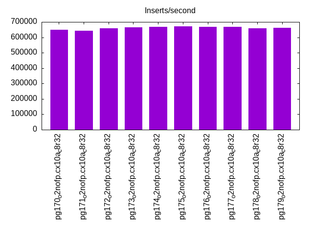
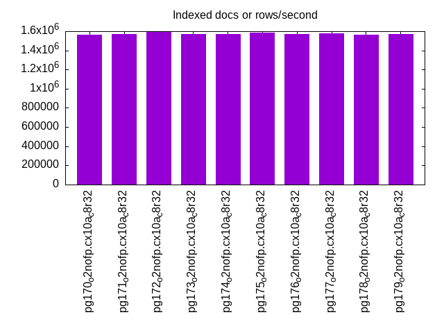
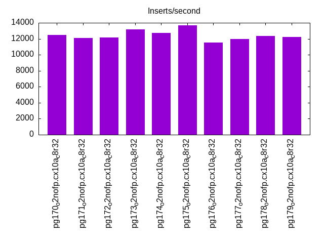
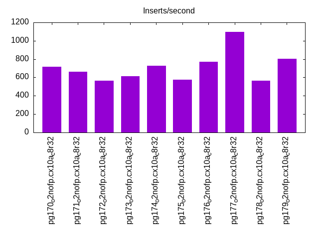
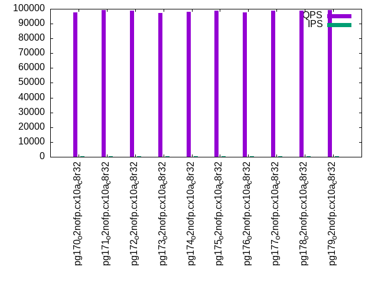
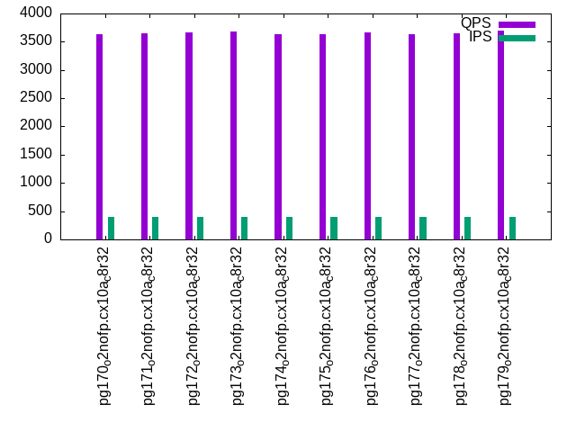
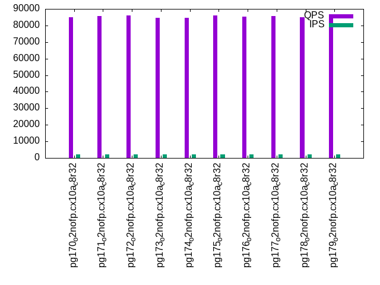
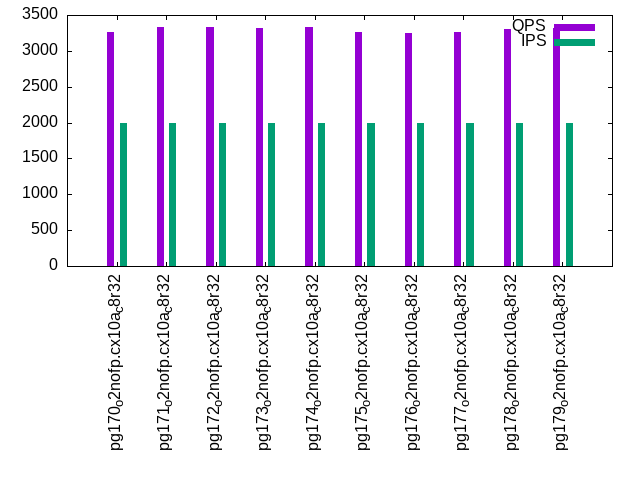
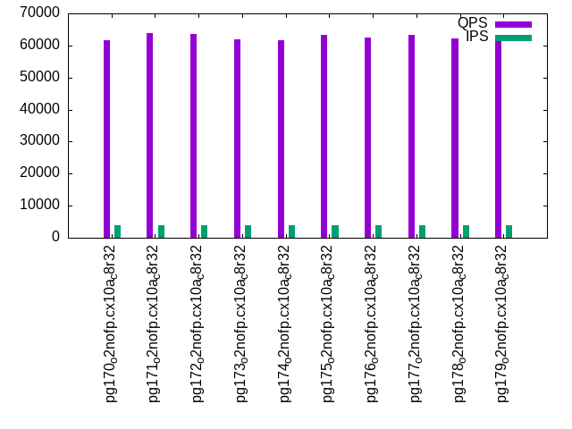
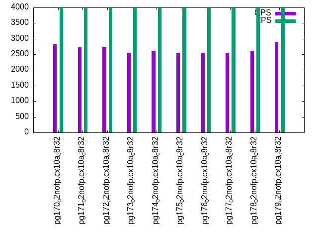

This is a report for the insert benchmark with 800M docs and 4 client(s). It is generated by scripts (bash, awk, sed) and Tufte might not be impressed. An overview of the insert benchmark is here and a short update is here. Below, by DBMS, I mean DBMS+version.config. An example is my8020.c10b40 where my means MySQL, 8020 is version 8.0.20 and c10b40 is the name for the configuration file.
The test server has 8 AMD cores, 32G RAM and an NVMe device for the database. The benchmark was run with 4 clients and there were 1 or 3 connections per client (1 for queries or inserts without rate limits, 1+1 for rate limited inserts+deletes). It uses 4 tables with a table per client. It loads 200M rows per table without secondary indexes, creates 3 secondary indexes per table, then inserts 4m+1m rows per table with a delete per insert to avoid growing the table. It then does 6 read+write tests for 1800s each that do queries as fast as possible with 100,100,500,500,1000,1000 inserts/s and the same for deletes/s per client concurrent with the queries. The database is IO-bound for most benchmark steps. Clients and the DBMS share one server.
The tested DBMS are:
The numbers are inserts/s for l.i0, l.i1 and l.i2, indexed docs (or rows) /s for l.x and queries/s for qr100, qp100 thru qr1000, qp1000" The values are the average rate over the entire test for inserts (IPS) and queries (QPS). The range of values for IPS and QPS is split into 3 parts: bottom 25%, middle 50%, top 25%. Values in the bottom 25% have a red background, values in the top 25% have a green background and values in the middle have no color. A gray background is used for values that can be ignored because the DBMS did not sustain the target insert rate. Red backgrounds are not used when the minimum value is within 80% of the max value.
| dbms | l.i0 | l.x | l.i1 | l.i2 | qr100 | qp100 | qr500 | qp500 | qr1000 | qp1000 |
|---|---|---|---|---|---|---|---|---|---|---|
| pg170_o2nofp.cx10a_c8r32 | 649351 | 1565558 | 12451 | 716 | 97525 | 3641 | 84883 | 3264 | 61702 | 2826 |
| pg171_o2nofp.cx10a_c8r32 | 642570 | 1571709 | 12084 | 663 | 99037 | 3646 | 85528 | 3326 | 63773 | 2728 |
| pg172_o2nofp.cx10a_c8r32 | 658436 | 1590457 | 12186 | 564 | 98910 | 3672 | 85916 | 3336 | 63678 | 2741 |
| pg173_o2nofp.cx10a_c8r32 | 663900 | 1571709 | 13190 | 613 | 97104 | 3677 | 84697 | 3314 | 61931 | 2547 |
| pg174_o2nofp.cx10a_c8r32 | 667780 | 1568628 | 12739 | 726 | 98086 | 3628 | 84541 | 3331 | 61659 | 2619 |
| pg175_o2nofp.cx10a_c8r32 | 670017 | 1584159 | 13699 | 573 | 98802 | 3641 | 86001 | 3262 | 63266 | 2554 |
| pg176_o2nofp.cx10a_c8r32 | 668896 | 1571709 | 11511 | 771 | 97778 | 3671 | 85405 | 3245 | 62379 | 2548 |
| pg177_o2nofp.cx10a_c8r32 | 667780 | 1574803 | 11958 | 1096 | 98677 | 3640 | 85792 | 3258 | 63333 | 2546 |
| pg178_o2nofp.cx10a_c8r32 | 657354 | 1562500 | 12327 | 566 | 98758 | 3646 | 84982 | 3310 | 62320 | 2614 |
| pg179_o2nofp.cx10a_c8r32 | 661157 | 1568628 | 12204 | 803 | 99169 | 3693 | 86227 | 3314 | 63175 | 2894 |
This table has relative throughput, throughput for the DBMS relative to the DBMS in the first line, using the absolute throughput from the previous table. Values less than 0.95 have a yellow background. Values greater than 1.05 have a blue background.
| dbms | l.i0 | l.x | l.i1 | l.i2 | qr100 | qp100 | qr500 | qp500 | qr1000 | qp1000 |
|---|---|---|---|---|---|---|---|---|---|---|
| pg170_o2nofp.cx10a_c8r32 | 1.00 | 1.00 | 1.00 | 1.00 | 1.00 | 1.00 | 1.00 | 1.00 | 1.00 | 1.00 |
| pg171_o2nofp.cx10a_c8r32 | 0.99 | 1.00 | 0.97 | 0.93 | 1.02 | 1.00 | 1.01 | 1.02 | 1.03 | 0.97 |
| pg172_o2nofp.cx10a_c8r32 | 1.01 | 1.02 | 0.98 | 0.79 | 1.01 | 1.01 | 1.01 | 1.02 | 1.03 | 0.97 |
| pg173_o2nofp.cx10a_c8r32 | 1.02 | 1.00 | 1.06 | 0.86 | 1.00 | 1.01 | 1.00 | 1.02 | 1.00 | 0.90 |
| pg174_o2nofp.cx10a_c8r32 | 1.03 | 1.00 | 1.02 | 1.01 | 1.01 | 1.00 | 1.00 | 1.02 | 1.00 | 0.93 |
| pg175_o2nofp.cx10a_c8r32 | 1.03 | 1.01 | 1.10 | 0.80 | 1.01 | 1.00 | 1.01 | 1.00 | 1.03 | 0.90 |
| pg176_o2nofp.cx10a_c8r32 | 1.03 | 1.00 | 0.92 | 1.08 | 1.00 | 1.01 | 1.01 | 0.99 | 1.01 | 0.90 |
| pg177_o2nofp.cx10a_c8r32 | 1.03 | 1.01 | 0.96 | 1.53 | 1.01 | 1.00 | 1.01 | 1.00 | 1.03 | 0.90 |
| pg178_o2nofp.cx10a_c8r32 | 1.01 | 1.00 | 0.99 | 0.79 | 1.01 | 1.00 | 1.00 | 1.01 | 1.01 | 0.92 |
| pg179_o2nofp.cx10a_c8r32 | 1.02 | 1.00 | 0.98 | 1.12 | 1.02 | 1.01 | 1.02 | 1.02 | 1.02 | 1.02 |
This lists the average rate of inserts/s for the tests that do inserts concurrent with queries. For such tests the query rate is listed in the table above. The read+write tests are setup so that the insert rate should match the target rate every second. Cells that are not at least 95% of the target have a red background to indicate a failure to satisfy the target.
| dbms | qr100.L1 | qp100.L2 | qr500.L3 | qp500.L4 | qr1000.L5 | qp1000.L6 |
|---|---|---|---|---|---|---|
| pg170_o2nofp.cx10a_c8r32 | 399 | 399 | 1996 | 1996 | 3991 | 3993 |
| pg171_o2nofp.cx10a_c8r32 | 399 | 399 | 1997 | 1997 | 3991 | 3991 |
| pg172_o2nofp.cx10a_c8r32 | 399 | 399 | 1997 | 1996 | 3991 | 3993 |
| pg173_o2nofp.cx10a_c8r32 | 399 | 399 | 1996 | 1997 | 3989 | 3991 |
| pg174_o2nofp.cx10a_c8r32 | 399 | 399 | 1997 | 1996 | 3993 | 3993 |
| pg175_o2nofp.cx10a_c8r32 | 399 | 399 | 1997 | 1996 | 3993 | 3991 |
| pg176_o2nofp.cx10a_c8r32 | 399 | 399 | 1997 | 1996 | 3991 | 3991 |
| pg177_o2nofp.cx10a_c8r32 | 399 | 399 | 1997 | 1996 | 3991 | 3993 |
| pg178_o2nofp.cx10a_c8r32 | 399 | 399 | 1997 | 1997 | 3991 | 3991 |
| pg179_o2nofp.cx10a_c8r32 | 399 | 399 | 1997 | 1996 | 3989 | 3993 |
| target | 400 | 400 | 2000 | 2000 | 4000 | 4000 |
l.i0: load without secondary indexes. Graphs for performance per 1-second interval are here.
Average throughput:

Insert response time histogram: each cell has the percentage of responses that take <= the time in the header and max is the max response time in seconds. For the max column values in the top 25% of the range have a red background and in the bottom 25% of the range have a green background. The red background is not used when the min value is within 80% of the max value.
| dbms | 256us | 1ms | 4ms | 16ms | 64ms | 256ms | 1s | 4s | 16s | gt | max |
|---|---|---|---|---|---|---|---|---|---|---|---|
| pg170_o2nofp.cx10a_c8r32 | 97.134 | 2.841 | 0.023 | 0.001 | nonzero | 0.081 | |||||
| pg171_o2nofp.cx10a_c8r32 | 96.556 | 3.098 | 0.343 | 0.003 | nonzero | 0.080 | |||||
| pg172_o2nofp.cx10a_c8r32 | 96.826 | 3.016 | 0.157 | 0.001 | nonzero | 0.080 | |||||
| pg173_o2nofp.cx10a_c8r32 | 97.075 | 2.901 | 0.023 | 0.002 | nonzero | 0.076 | |||||
| pg174_o2nofp.cx10a_c8r32 | 97.160 | 2.815 | 0.023 | 0.002 | nonzero | 0.078 | |||||
| pg175_o2nofp.cx10a_c8r32 | 97.086 | 2.883 | 0.030 | 0.001 | nonzero | 0.078 | |||||
| pg176_o2nofp.cx10a_c8r32 | 97.088 | 2.886 | 0.024 | 0.001 | nonzero | 0.080 | |||||
| pg177_o2nofp.cx10a_c8r32 | 97.100 | 2.875 | 0.022 | 0.002 | nonzero | 0.077 | |||||
| pg178_o2nofp.cx10a_c8r32 | 96.800 | 3.162 | 0.036 | 0.002 | nonzero | 0.079 | |||||
| pg179_o2nofp.cx10a_c8r32 | 96.971 | 2.953 | 0.073 | 0.003 | nonzero | 0.077 |
Performance metrics for the DBMS listed above. Some are normalized by throughput, others are not. Legend for results is here.
ips qps rps rmbps wps wmbps rpq rkbpq wpi wkbpi csps cpups cspq cpupq dbgb1 dbgb2 rss maxop p50 p99 tag 649351 0 454 3.6 2502.3 266.4 0.001 0.006 0.004 0.420 55496 69.8 0.085 9 76.5 116.6 23.3 0.081 173384 151580 pg170_o2nofp.cx10a_c8r32 642570 0 415 3.3 2483.7 264.7 0.001 0.005 0.004 0.422 55166 69.2 0.086 9 76.5 116.6 3.9 0.080 169784 38894 pg171_o2nofp.cx10a_c8r32 658436 0 440 3.5 2550.4 272.2 0.001 0.005 0.004 0.423 56380 70.7 0.086 9 76.5 116.6 23.3 0.080 169579 55293 pg172_o2nofp.cx10a_c8r32 663900 0 457 3.7 2567.8 273.9 0.001 0.006 0.004 0.422 56762 71.2 0.085 9 76.5 116.6 5.2 0.076 170237 141984 pg173_o2nofp.cx10a_c8r32 667780 0 463 3.7 2568.8 275.5 0.001 0.006 0.004 0.422 56769 71.0 0.085 9 76.5 116.6 23.3 0.078 170883 132787 pg174_o2nofp.cx10a_c8r32 670017 0 447 3.6 2606.4 278.2 0.001 0.005 0.004 0.425 56836 71.0 0.085 8 76.5 116.6 23.3 0.078 170982 135976 pg175_o2nofp.cx10a_c8r32 668896 0 429 3.4 2589.2 276.4 0.001 0.005 0.004 0.423 56463 71.3 0.084 9 76.5 116.6 23.3 0.080 170883 141770 pg176_o2nofp.cx10a_c8r32 667780 0 439 3.5 2583.8 274.8 0.001 0.005 0.004 0.421 56543 71.4 0.085 9 76.5 116.6 23.3 0.077 168683 142435 pg177_o2nofp.cx10a_c8r32 657354 0 428 3.4 2536.6 272.0 0.001 0.005 0.004 0.424 54725 72.4 0.083 9 76.5 116.6 23.3 0.079 168582 115773 pg178_o2nofp.cx10a_c8r32 661157 0 442 3.5 2560.5 273.9 0.001 0.005 0.004 0.424 56355 70.6 0.085 9 76.5 116.6 23.3 0.077 169277 140381 pg179_o2nofp.cx10a_c8r32
Average values from iostat.
r/s rkB/s rrqm/s %rrqm r_await rareq-s w/s wkB/s wrqm/s %wrqm w_await wareq-s d/s dkB/s drqm/s %drqm d_await dareq-s f/s f_await aqu-sz %util 455.8 3746.3 0.249 1.243 0.221 14.03 2510.0 273675 204.0 6.826 0.490 109.8 0.382 1198.9 0.000 0.000 0.801 197.1 128.8 1.722 1.459 34.98 pg170_o2nofp.cx10a_c8r32 416.6 3409.0 0.223 1.652 0.349 4.881 2491.3 271904 174.7 6.178 0.490 109.3 0.355 648.0 0.000 0.000 0.608 152.3 127.5 1.730 1.447 34.42 pg171_o2nofp.cx10a_c8r32 441.3 3611.9 0.283 2.606 0.264 4.971 2558.6 279668 192.6 6.460 0.486 109.6 0.302 951.3 0.000 0.000 0.502 195.6 130.4 1.747 1.481 35.39 pg172_o2nofp.cx10a_c8r32 458.8 3765.6 0.270 1.797 0.271 11.72 2576.1 281372 180.6 6.291 0.509 109.7 0.359 947.6 0.000 0.000 0.699 180.3 131.5 1.795 1.560 36.18 pg173_o2nofp.cx10a_c8r32 464.5 3800.2 0.166 1.239 0.326 5.119 2577.1 283027 193.7 6.529 0.515 110.2 0.389 1449.1 0.000 0.000 0.628 238.0 132.2 1.812 1.581 36.86 pg174_o2nofp.cx10a_c8r32 448.5 3680.5 0.099 0.420 0.311 9.631 2614.9 285814 190.8 6.580 0.544 109.7 0.392 1833.4 0.000 0.000 0.725 249.3 132.6 1.853 1.655 37.71 pg175_o2nofp.cx10a_c8r32 431.1 3526.5 0.142 0.792 0.335 4.667 2597.6 283930 184.0 6.446 0.532 109.8 0.351 1526.4 0.000 0.000 0.630 253.9 132.3 1.852 1.600 37.56 pg176_o2nofp.cx10a_c8r32 440.6 3615.4 0.155 1.753 0.299 11.16 2592.2 282312 189.6 6.472 0.518 109.6 0.360 1208.2 0.000 0.000 0.516 223.2 132.0 1.853 1.588 37.30 pg177_o2nofp.cx10a_c8r32 429.4 3526.5 0.353 1.743 0.292 9.396 2544.8 279416 200.1 6.808 0.511 110.2 0.429 1159.5 0.000 0.000 0.827 294.0 130.1 1.831 1.533 36.53 pg178_o2nofp.cx10a_c8r32 444.0 3647.0 0.160 0.746 0.496 12.92 2568.8 281401 191.7 7.175 0.847 109.7 0.518 4974.2 0.000 0.000 0.717 747.9 130.3 2.572 2.386 45.58 pg179_o2nofp.cx10a_c8r32
l.x: create secondary indexes.
Average throughput:

Performance metrics for the DBMS listed above. Some are normalized by throughput, others are not. Legend for results is here.
ips qps rps rmbps wps wmbps rpq rkbpq wpi wkbpi csps cpups cspq cpupq dbgb1 dbgb2 rss maxop p50 p99 tag 1565558 0 4760 456.6 3852.3 461.8 0.003 0.299 0.002 0.302 10457 46.1 0.007 2 153.7 193.7 22.1 0.002 NA NA pg170_o2nofp.cx10a_c8r32 1571709 0 5059 450.5 3828.3 461.3 0.003 0.294 0.002 0.301 10074 46.3 0.006 2 153.7 193.7 22.3 0.002 NA NA pg171_o2nofp.cx10a_c8r32 1590457 0 4256 438.6 3852.2 463.7 0.003 0.282 0.002 0.299 9909 46.4 0.006 2 153.7 193.7 22.3 0.002 NA NA pg172_o2nofp.cx10a_c8r32 1571709 0 4762 453.8 3802.4 458.1 0.003 0.296 0.002 0.298 10293 45.9 0.007 2 153.7 193.7 22.5 0.002 NA NA pg173_o2nofp.cx10a_c8r32 1568628 0 4732 454.8 3799.1 457.7 0.003 0.297 0.002 0.299 10363 46.0 0.007 2 153.7 193.7 22.4 0.002 NA NA pg174_o2nofp.cx10a_c8r32 1584159 0 4647 453.5 3860.1 463.2 0.003 0.293 0.002 0.299 10382 46.1 0.007 2 153.7 193.7 22.4 0.002 NA NA pg175_o2nofp.cx10a_c8r32 1571709 0 4791 458.0 3833.6 461.3 0.003 0.298 0.002 0.301 10539 46.1 0.007 2 153.7 193.7 22.3 0.002 NA NA pg176_o2nofp.cx10a_c8r32 1574803 0 4783 458.3 3827.0 460.9 0.003 0.298 0.002 0.300 10344 46.2 0.007 2 153.7 193.7 22.3 0.002 NA NA pg177_o2nofp.cx10a_c8r32 1562500 0 4723 453.1 3797.9 455.9 0.003 0.297 0.002 0.299 10191 46.1 0.007 2 153.7 193.7 22.3 0.002 NA NA pg178_o2nofp.cx10a_c8r32 1568628 0 4770 454.7 3846.7 463.9 0.003 0.297 0.002 0.303 10245 46.1 0.007 2 153.7 193.7 22.4 0.002 NA NA pg179_o2nofp.cx10a_c8r32
Average values from iostat.
r/s rkB/s rrqm/s %rrqm r_await rareq-s w/s wkB/s wrqm/s %wrqm w_await wareq-s d/s dkB/s drqm/s %drqm d_await dareq-s f/s f_await aqu-sz %util 4779.0 468591 0.018 0.000 0.131 91.04 3881.5 476469 139.4 2.680 0.463 123.5 4.660 134055 0.000 0.000 0.519 7828.4 42.40 1.864 2.709 49.43 pg170_o2nofp.cx10a_c8r32 5081.4 462396 0.000 0.000 0.128 86.20 3856.6 475818 150.7 2.718 0.453 124.5 4.638 123006 0.000 0.000 0.489 1824.0 42.45 1.969 2.784 48.61 pg171_o2nofp.cx10a_c8r32 4269.9 450009 0.636 0.035 0.152 100.3 3884.8 478870 145.7 2.758 0.483 123.9 4.687 123039 0.000 0.000 0.513 2185.6 42.66 2.196 2.747 48.05 pg172_o2nofp.cx10a_c8r32 4781.0 465718 0.004 0.000 0.135 90.75 3832.0 472700 141.7 2.704 0.466 124.0 5.440 149262 0.000 0.000 0.500 2054.6 42.76 2.027 2.754 50.19 pg173_o2nofp.cx10a_c8r32 4751.2 466779 0.074 0.002 0.122 91.07 3829.3 472423 131.5 2.677 0.502 123.8 4.108 108143 0.000 0.000 0.488 2320.7 41.33 1.992 2.804 49.32 pg174_o2nofp.cx10a_c8r32 4665.2 465413 0.388 0.016 0.137 93.88 3889.1 477851 143.8 2.689 0.489 123.6 5.279 150672 0.000 0.000 0.500 1933.9 43.28 1.984 2.832 50.29 pg175_o2nofp.cx10a_c8r32 4810.7 470070 0.076 0.001 0.122 90.42 3861.7 475802 140.1 2.770 0.479 123.8 4.466 119119 0.000 0.000 0.551 1915.4 42.00 2.161 2.769 50.19 pg176_o2nofp.cx10a_c8r32 4802.9 470389 0.000 0.000 0.130 93.21 3859.8 475989 136.1 2.719 0.471 123.9 4.008 108380 0.000 0.000 0.600 2385.9 41.83 1.912 2.762 50.19 pg177_o2nofp.cx10a_c8r32 4742.0 465012 0.459 0.027 0.133 93.16 3828.3 470548 140.0 2.621 0.513 123.7 4.646 134404 0.000 0.000 0.519 2728.7 43.05 1.990 2.928 49.38 pg178_o2nofp.cx10a_c8r32 4787.6 466728 0.044 0.001 0.128 90.88 3878.2 478930 135.0 2.929 0.442 123.7 5.697 136670 0.000 0.000 0.503 1778.7 39.97 1.838 2.560 49.97 pg179_o2nofp.cx10a_c8r32
l.i1: continue load after secondary indexes created with 50 inserts per transaction. Graphs for performance per 1-second interval are here.
Average throughput:

Insert response time histogram: each cell has the percentage of responses that take <= the time in the header and max is the max response time in seconds. For the max column values in the top 25% of the range have a red background and in the bottom 25% of the range have a green background. The red background is not used when the min value is within 80% of the max value.
| dbms | 256us | 1ms | 4ms | 16ms | 64ms | 256ms | 1s | 4s | 16s | gt | max |
|---|---|---|---|---|---|---|---|---|---|---|---|
| pg170_o2nofp.cx10a_c8r32 | 0.494 | 87.606 | 11.889 | 0.011 | 0.106 | ||||||
| pg171_o2nofp.cx10a_c8r32 | 1.348 | 90.810 | 7.842 | nonzero | 0.067 | ||||||
| pg172_o2nofp.cx10a_c8r32 | 0.240 | 85.837 | 13.920 | 0.003 | 0.085 | ||||||
| pg173_o2nofp.cx10a_c8r32 | 0.246 | 84.209 | 15.544 | 0.001 | 0.078 | ||||||
| pg174_o2nofp.cx10a_c8r32 | 0.358 | 85.080 | 14.560 | 0.002 | 0.074 | ||||||
| pg175_o2nofp.cx10a_c8r32 | 0.197 | 83.118 | 16.683 | 0.002 | 0.077 | ||||||
| pg176_o2nofp.cx10a_c8r32 | 0.427 | 87.664 | 11.902 | 0.007 | 0.084 | ||||||
| pg177_o2nofp.cx10a_c8r32 | 0.608 | 84.158 | 15.231 | 0.003 | 0.080 | ||||||
| pg178_o2nofp.cx10a_c8r32 | 0.276 | 86.887 | 12.837 | nonzero | 0.068 | ||||||
| pg179_o2nofp.cx10a_c8r32 | 2.340 | 89.968 | 7.692 | 0.001 | 0.066 |
Delete response time histogram: each cell has the percentage of responses that take <= the time in the header and max is the max response time in seconds. For the max column values in the top 25% of the range have a red background and in the bottom 25% of the range have a green background. The red background is not used when the min value is within 80% of the max value.
| dbms | 256us | 1ms | 4ms | 16ms | 64ms | 256ms | 1s | 4s | 16s | gt | max |
|---|---|---|---|---|---|---|---|---|---|---|---|
| pg170_o2nofp.cx10a_c8r32 | 0.002 | 2.400 | 9.687 | 73.278 | 14.631 | 0.002 | 0.077 | ||||
| pg171_o2nofp.cx10a_c8r32 | 0.002 | 2.445 | 9.410 | 57.290 | 30.853 | 0.037 | |||||
| pg172_o2nofp.cx10a_c8r32 | 0.002 | 2.403 | 9.566 | 73.540 | 14.488 | 0.041 | |||||
| pg173_o2nofp.cx10a_c8r32 | 0.003 | 2.406 | 9.658 | 78.945 | 8.988 | 0.036 | |||||
| pg174_o2nofp.cx10a_c8r32 | 0.004 | 2.489 | 9.365 | 76.020 | 12.122 | 0.040 | |||||
| pg175_o2nofp.cx10a_c8r32 | 0.002 | 2.477 | 9.326 | 78.534 | 9.661 | 0.039 | |||||
| pg176_o2nofp.cx10a_c8r32 | 0.002 | 2.458 | 9.420 | 57.150 | 30.970 | 0.038 | |||||
| pg177_o2nofp.cx10a_c8r32 | 0.003 | 2.450 | 9.588 | 71.312 | 16.647 | 0.035 | |||||
| pg178_o2nofp.cx10a_c8r32 | 0.002 | 2.442 | 9.543 | 65.321 | 22.692 | 0.042 | |||||
| pg179_o2nofp.cx10a_c8r32 | 0.002 | 2.427 | 9.534 | 70.906 | 17.131 | 0.034 |
Performance metrics for the DBMS listed above. Some are normalized by throughput, others are not. Legend for results is here.
ips qps rps rmbps wps wmbps rpq rkbpq wpi wkbpi csps cpups cspq cpupq dbgb1 dbgb2 rss maxop p50 p99 tag 12451 0 14586 121.7 16376.6 282.5 1.171 10.011 1.315 23.235 32897 49.8 2.642 320 156.3 196.3 23.4 0.106 3548 2398 pg170_o2nofp.cx10a_c8r32 12084 0 13980 111.3 15909.3 269.0 1.157 9.430 1.317 22.796 31906 54.2 2.640 359 156.3 196.3 23.3 0.067 3700 2350 pg171_o2nofp.cx10a_c8r32 12186 0 14334 115.3 16144.3 277.6 1.176 9.690 1.325 23.328 32449 49.8 2.663 327 156.3 196.3 23.3 0.085 2900 1700 pg172_o2nofp.cx10a_c8r32 13190 0 15498 124.0 17435.6 298.2 1.175 9.628 1.322 23.154 35101 51.0 2.661 309 156.3 196.3 23.3 0.078 3450 2296 pg173_o2nofp.cx10a_c8r32 12739 0 14918 118.8 16846.4 285.5 1.171 9.548 1.322 22.947 33883 50.3 2.660 316 156.3 196.3 23.3 0.074 3150 1650 pg174_o2nofp.cx10a_c8r32 13699 0 16116 134.7 18186.5 311.5 1.177 10.072 1.328 23.283 36350 53.1 2.654 310 156.3 196.3 23.3 0.077 3550 1596 pg175_o2nofp.cx10a_c8r32 11511 0 13375 109.8 15242.6 257.6 1.162 9.768 1.324 22.915 30274 51.8 2.630 360 156.3 196.3 23.3 0.084 3750 2398 pg176_o2nofp.cx10a_c8r32 11958 0 13901 111.2 15833.9 266.5 1.163 9.522 1.324 22.824 31553 48.1 2.639 322 156.3 196.3 23.3 0.080 2450 1800 pg177_o2nofp.cx10a_c8r32 12327 0 14476 117.2 16305.6 278.6 1.174 9.739 1.323 23.141 32666 53.9 2.650 350 156.3 196.3 23.3 0.068 3650 2350 pg178_o2nofp.cx10a_c8r32 12204 0 13994 111.5 15532.9 270.4 1.147 9.356 1.273 22.686 31734 48.6 2.600 319 156.3 196.3 23.3 0.066 3550 2600 pg179_o2nofp.cx10a_c8r32
Average values from iostat.
r/s rkB/s rrqm/s %rrqm r_await rareq-s w/s wkB/s wrqm/s %wrqm w_await wareq-s d/s dkB/s drqm/s %drqm d_await dareq-s f/s f_await aqu-sz %util 14532.7 124245 0.000 0.000 0.134 8.699 16434.6 289760 269.5 1.782 0.630 20.12 0.223 2932.9 0.000 0.000 0.231 377.5 128.7 2.814 13.53 78.41 pg170_o2nofp.cx10a_c8r32 13919.9 113481 0.004 0.000 0.122 8.140 15963.5 275826 198.1 1.451 0.602 19.84 0.158 2069.2 0.000 0.000 0.106 345.6 125.8 2.814 11.33 80.97 pg171_o2nofp.cx10a_c8r32 14284.7 117688 0.002 0.000 0.139 8.231 16200.4 284722 189.4 1.577 0.677 20.52 0.227 2963.1 0.000 0.000 0.064 356.1 127.1 2.940 13.92 79.85 pg172_o2nofp.cx10a_c8r32 15441.0 126550 0.000 0.000 0.151 8.179 17501.3 305920 269.7 1.779 0.741 20.58 0.249 3319.6 0.000 0.000 0.083 375.6 135.7 2.977 16.29 84.80 pg173_o2nofp.cx10a_c8r32 14868.5 121237 0.000 0.000 0.145 8.142 16907.7 292814 202.6 1.663 0.724 20.54 0.200 2556.8 0.000 0.000 0.170 349.9 130.4 3.005 15.43 82.05 pg174_o2nofp.cx10a_c8r32 16067.8 137622 0.000 0.000 0.165 8.609 18258.4 319589 207.7 1.455 0.830 20.81 0.244 3277.8 0.000 0.000 0.241 470.4 142.2 3.068 18.30 89.73 pg175_o2nofp.cx10a_c8r32 13319.0 111997 0.003 0.000 0.145 8.649 15291.9 264072 202.9 1.743 0.710 19.93 0.239 3255.2 0.000 0.000 0.065 404.2 118.7 3.155 13.18 81.79 pg176_o2nofp.cx10a_c8r32 13849.2 113451 0.000 0.000 0.145 8.181 15887.8 273315 204.5 1.462 0.706 19.67 0.211 2883.4 0.000 0.000 0.047 349.2 121.3 3.067 14.88 78.34 pg177_o2nofp.cx10a_c8r32 14424.3 119639 0.006 0.000 0.144 8.261 16362.9 285687 188.9 1.399 0.707 20.03 0.186 2210.9 0.000 0.000 0.176 407.5 127.4 3.044 14.28 84.26 pg178_o2nofp.cx10a_c8r32 13929.0 113666 0.002 0.000 0.112 8.147 15584.2 276976 230.3 1.707 0.517 20.34 0.169 2285.8 0.000 0.000 0.068 422.6 125.2 2.650 10.61 73.64 pg179_o2nofp.cx10a_c8r32
l.i2: continue load after secondary indexes created with 5 inserts per transaction. Graphs for performance per 1-second interval are here.
Average throughput:

Insert response time histogram: each cell has the percentage of responses that take <= the time in the header and max is the max response time in seconds. For the max column values in the top 25% of the range have a red background and in the bottom 25% of the range have a green background. The red background is not used when the min value is within 80% of the max value.
| dbms | 256us | 1ms | 4ms | 16ms | 64ms | 256ms | 1s | 4s | 16s | gt | max |
|---|---|---|---|---|---|---|---|---|---|---|---|
| pg170_o2nofp.cx10a_c8r32 | nonzero | 39.202 | 59.824 | 0.974 | 0.001 | 0.020 | |||||
| pg171_o2nofp.cx10a_c8r32 | 0.014 | 40.975 | 56.944 | 2.066 | 0.001 | 0.022 | |||||
| pg172_o2nofp.cx10a_c8r32 | 30.349 | 68.817 | 0.833 | 0.001 | 0.018 | ||||||
| pg173_o2nofp.cx10a_c8r32 | 0.118 | 43.538 | 50.329 | 5.999 | 0.015 | 0.031 | |||||
| pg174_o2nofp.cx10a_c8r32 | 0.059 | 40.674 | 57.903 | 1.363 | 0.002 | 0.021 | |||||
| pg175_o2nofp.cx10a_c8r32 | 0.141 | 40.513 | 57.316 | 2.023 | 0.007 | 0.057 | |||||
| pg176_o2nofp.cx10a_c8r32 | nonzero | 36.645 | 62.331 | 1.023 | 0.001 | 0.019 | |||||
| pg177_o2nofp.cx10a_c8r32 | 0.024 | 43.058 | 54.370 | 2.546 | 0.002 | 0.021 | |||||
| pg178_o2nofp.cx10a_c8r32 | 0.025 | 38.010 | 60.210 | 1.752 | 0.003 | 0.021 | |||||
| pg179_o2nofp.cx10a_c8r32 | 0.001 | 42.850 | 56.171 | 0.978 | 0.001 | 0.022 |
Delete response time histogram: each cell has the percentage of responses that take <= the time in the header and max is the max response time in seconds. For the max column values in the top 25% of the range have a red background and in the bottom 25% of the range have a green background. The red background is not used when the min value is within 80% of the max value.
| dbms | 256us | 1ms | 4ms | 16ms | 64ms | 256ms | 1s | 4s | 16s | gt | max |
|---|---|---|---|---|---|---|---|---|---|---|---|
| pg170_o2nofp.cx10a_c8r32 | 1.790 | 98.209 | 0.001 | 0.089 | |||||||
| pg171_o2nofp.cx10a_c8r32 | 0.302 | 5.921 | 6.226 | 7.099 | 80.451 | 0.001 | 0.089 | ||||
| pg172_o2nofp.cx10a_c8r32 | 0.042 | 99.957 | 0.001 | 0.087 | |||||||
| pg173_o2nofp.cx10a_c8r32 | 0.606 | 10.736 | 26.454 | 0.081 | 62.123 | 0.001 | 0.085 | ||||
| pg174_o2nofp.cx10a_c8r32 | 0.499 | 4.118 | 0.179 | 0.020 | 95.184 | 0.001 | 0.081 | ||||
| pg175_o2nofp.cx10a_c8r32 | 0.442 | 6.006 | 15.113 | 0.066 | 78.373 | 0.001 | 0.089 | ||||
| pg176_o2nofp.cx10a_c8r32 | 0.038 | 99.962 | 0.001 | 0.089 | |||||||
| pg177_o2nofp.cx10a_c8r32 | 0.320 | 6.020 | 5.985 | 5.069 | 82.606 | 0.001 | 0.073 | ||||
| pg178_o2nofp.cx10a_c8r32 | 0.352 | 4.555 | 5.041 | 0.004 | 90.047 | 0.001 | 0.088 | ||||
| pg179_o2nofp.cx10a_c8r32 | 0.052 | 99.948 | 0.001 | 0.072 |
Performance metrics for the DBMS listed above. Some are normalized by throughput, others are not. Legend for results is here.
ips qps rps rmbps wps wmbps rpq rkbpq wpi wkbpi csps cpups cspq cpupq dbgb1 dbgb2 rss maxop p50 p99 tag 716 0 788 6.8 1224.7 18.3 1.101 9.736 1.710 26.158 4484 38.6 6.260 4312 157.0 197.0 23.4 0.020 270 245 pg170_o2nofp.cx10a_c8r32 663 0 774 10.3 1187.1 19.5 1.168 15.848 1.790 30.145 4144 31.4 6.248 3788 156.9 196.9 23.3 0.022 300 285 pg171_o2nofp.cx10a_c8r32 564 0 621 4.9 950.6 14.7 1.100 8.929 1.684 26.649 3547 41.4 6.285 5868 157.0 197.0 23.3 0.018 140 130 pg172_o2nofp.cx10a_c8r32 613 0 740 12.8 1243.5 21.5 1.207 21.388 2.029 35.872 3793 24.6 6.189 3211 156.8 196.9 23.3 0.031 285 260 pg173_o2nofp.cx10a_c8r32 726 0 817 8.1 1255.9 19.7 1.125 11.470 1.730 27.788 4531 38.8 6.241 4275 157.0 197.0 23.3 0.021 145 135 pg174_o2nofp.cx10a_c8r32 573 0 632 8.3 990.5 16.3 1.103 14.868 1.729 29.167 3552 33.7 6.202 4708 156.9 196.9 23.3 0.057 145 130 pg175_o2nofp.cx10a_c8r32 771 0 853 7.0 1268.3 19.1 1.106 9.313 1.645 25.308 4808 42.4 6.238 4401 157.0 197.0 23.3 0.019 145 125 pg176_o2nofp.cx10a_c8r32 1096 0 1281 16.3 1797.4 29.3 1.170 15.190 1.641 27.419 6831 44.2 6.235 3228 156.9 196.9 23.3 0.021 275 250 pg177_o2nofp.cx10a_c8r32 566 0 648 8.4 1032.9 16.8 1.145 15.105 1.825 30.470 3568 39.6 6.302 5596 156.9 197.0 23.3 0.021 145 135 pg178_o2nofp.cx10a_c8r32 803 0 892 7.1 1328.8 19.8 1.110 9.050 1.654 25.234 4997 41.5 6.221 4133 157.0 197.0 23.3 0.022 155 125 pg179_o2nofp.cx10a_c8r32
Average values from iostat.
r/s rkB/s rrqm/s %rrqm r_await rareq-s w/s wkB/s wrqm/s %wrqm w_await wareq-s d/s dkB/s drqm/s %drqm d_await dareq-s f/s f_await aqu-sz %util 788.0 6971.4 0.000 0.000 0.087 8.754 1224.7 18734.5 15.50 1.323 0.124 15.16 0.012 135.3 0.000 0.000 0.007 12.52 10.84 3.196 0.257 11.01 pg170_o2nofp.cx10a_c8r32 774.2 10512.2 0.000 0.000 0.092 8.965 1186.8 19990.0 11.97 1.499 0.153 18.14 0.002 0.208 0.000 0.000 0.007 0.458 11.31 3.242 0.501 10.89 pg171_o2nofp.cx10a_c8r32 620.9 5039.1 0.000 0.000 0.085 8.113 950.6 15039.7 11.23 1.322 0.121 16.96 0.004 30.23 0.000 0.000 0.004 10.29 8.853 3.233 0.190 9.090 pg172_o2nofp.cx10a_c8r32 739.5 13111.4 0.000 0.000 0.101 9.177 1243.6 21986.7 15.23 1.902 0.209 19.71 0.013 161.1 0.000 0.000 0.005 31.85 13.07 3.282 0.938 10.60 pg173_o2nofp.cx10a_c8r32 816.8 8329.0 0.000 0.000 0.089 8.512 1256.3 20179.1 13.69 1.162 0.140 15.16 0.006 50.84 0.000 0.000 0.005 12.97 11.86 3.264 0.337 11.71 pg174_o2nofp.cx10a_c8r32 631.7 8516.4 0.000 0.000 0.092 9.332 990.5 16704.6 11.70 1.288 0.136 17.73 0.007 75.33 0.000 0.000 0.009 10.74 9.815 3.326 0.400 9.513 pg175_o2nofp.cx10a_c8r32 852.5 7176.5 0.026 0.002 0.087 8.339 1268.0 19500.0 14.46 1.491 0.141 16.11 0.002 0.229 0.000 0.000 0.004 0.550 11.35 3.294 0.277 11.79 pg176_o2nofp.cx10a_c8r32 1281.7 16652.8 0.057 0.005 0.093 9.008 1798.4 30052.7 17.26 1.135 0.168 16.44 0.012 135.1 0.000 0.000 0.003 19.14 16.38 3.292 0.880 17.14 pg177_o2nofp.cx10a_c8r32 648.1 8553.4 0.000 0.000 0.089 8.771 1033.2 17253.9 13.06 1.277 0.131 17.03 0.003 0.264 0.000 0.000 0.010 0.495 9.986 3.294 0.342 10.09 pg178_o2nofp.cx10a_c8r32 891.5 7269.1 0.000 0.000 0.086 8.145 1328.9 20269.8 16.52 1.400 0.130 15.27 0.002 0.197 0.000 0.000 0.005 0.339 12.08 3.152 0.286 12.12 pg179_o2nofp.cx10a_c8r32
qr100.L1: range queries with 100 insert/s per client. Graphs for performance per 1-second interval are here.
Average throughput:

Query response time histogram: each cell has the percentage of responses that take <= the time in the header and max is the max response time in seconds. For max values in the top 25% of the range have a red background and in the bottom 25% of the range have a green background. The red background is not used when the min value is within 80% of the max value.
| dbms | 256us | 1ms | 4ms | 16ms | 64ms | 256ms | 1s | 4s | 16s | gt | max |
|---|---|---|---|---|---|---|---|---|---|---|---|
| pg170_o2nofp.cx10a_c8r32 | 99.987 | 0.012 | nonzero | nonzero | 0.010 | ||||||
| pg171_o2nofp.cx10a_c8r32 | 99.987 | 0.013 | nonzero | nonzero | 0.012 | ||||||
| pg172_o2nofp.cx10a_c8r32 | 99.987 | 0.012 | nonzero | nonzero | 0.010 | ||||||
| pg173_o2nofp.cx10a_c8r32 | 99.987 | 0.013 | nonzero | nonzero | 0.006 | ||||||
| pg174_o2nofp.cx10a_c8r32 | 99.988 | 0.012 | nonzero | nonzero | 0.009 | ||||||
| pg175_o2nofp.cx10a_c8r32 | 99.982 | 0.016 | 0.001 | nonzero | 0.010 | ||||||
| pg176_o2nofp.cx10a_c8r32 | 99.987 | 0.013 | nonzero | nonzero | 0.010 | ||||||
| pg177_o2nofp.cx10a_c8r32 | 99.989 | 0.011 | nonzero | nonzero | 0.011 | ||||||
| pg178_o2nofp.cx10a_c8r32 | 99.987 | 0.013 | nonzero | nonzero | 0.010 | ||||||
| pg179_o2nofp.cx10a_c8r32 | 99.984 | 0.014 | 0.001 | nonzero | 0.010 |
Insert response time histogram: each cell has the percentage of responses that take <= the time in the header and max is the max response time in seconds. For max values in the top 25% of the range have a red background and in the bottom 25% of the range have a green background. The red background is not used when the min value is within 80% of the max value.
| dbms | 256us | 1ms | 4ms | 16ms | 64ms | 256ms | 1s | 4s | 16s | gt | max |
|---|---|---|---|---|---|---|---|---|---|---|---|
| pg170_o2nofp.cx10a_c8r32 | 0.007 | 99.375 | 0.618 | 0.026 | |||||||
| pg171_o2nofp.cx10a_c8r32 | 0.056 | 99.736 | 0.208 | 0.028 | |||||||
| pg172_o2nofp.cx10a_c8r32 | 98.882 | 1.118 | 0.026 | ||||||||
| pg173_o2nofp.cx10a_c8r32 | 0.375 | 98.931 | 0.694 | 0.032 | |||||||
| pg174_o2nofp.cx10a_c8r32 | 0.028 | 98.681 | 1.292 | 0.028 | |||||||
| pg175_o2nofp.cx10a_c8r32 | 0.007 | 98.333 | 1.660 | 0.055 | |||||||
| pg176_o2nofp.cx10a_c8r32 | 99.722 | 0.278 | 0.029 | ||||||||
| pg177_o2nofp.cx10a_c8r32 | 99.632 | 0.368 | 0.022 | ||||||||
| pg178_o2nofp.cx10a_c8r32 | 0.007 | 99.556 | 0.438 | 0.030 | |||||||
| pg179_o2nofp.cx10a_c8r32 | 98.743 | 1.257 | 0.041 |
Delete response time histogram: each cell has the percentage of responses that take <= the time in the header and max is the max response time in seconds. For max values in the top 25% of the range have a red background and in the bottom 25% of the range have a green background. The red background is not used when the min value is within 80% of the max value.
| dbms | 256us | 1ms | 4ms | 16ms | 64ms | 256ms | 1s | 4s | 16s | gt | max |
|---|---|---|---|---|---|---|---|---|---|---|---|
| pg170_o2nofp.cx10a_c8r32 | 0.049 | 66.701 | 33.243 | 0.007 | 0.004 | ||||||
| pg171_o2nofp.cx10a_c8r32 | 0.062 | 68.569 | 31.361 | 0.007 | 0.004 | ||||||
| pg172_o2nofp.cx10a_c8r32 | 0.097 | 76.875 | 23.021 | 0.007 | 0.004 | ||||||
| pg173_o2nofp.cx10a_c8r32 | 0.042 | 60.410 | 39.535 | 0.014 | 0.004 | ||||||
| pg174_o2nofp.cx10a_c8r32 | 0.021 | 60.139 | 39.785 | 0.056 | 0.005 | ||||||
| pg175_o2nofp.cx10a_c8r32 | 0.174 | 75.201 | 24.597 | 0.028 | 0.005 | ||||||
| pg176_o2nofp.cx10a_c8r32 | 0.111 | 75.896 | 23.986 | 0.007 | 0.005 | ||||||
| pg177_o2nofp.cx10a_c8r32 | 0.021 | 68.812 | 31.167 | 0.003 | |||||||
| pg178_o2nofp.cx10a_c8r32 | 0.132 | 77.285 | 22.576 | 0.007 | 0.004 | ||||||
| pg179_o2nofp.cx10a_c8r32 | 0.090 | 67.833 | 32.062 | 0.014 | 0.005 |
Performance metrics for the DBMS listed above. Some are normalized by throughput, others are not. Legend for results is here.
ips qps rps rmbps wps wmbps rpq rkbpq wpi wkbpi csps cpups cspq cpupq dbgb1 dbgb2 rss maxop p50 p99 tag 399 97525 484 3.9 263.0 7.5 0.005 0.041 0.659 19.154 372695 41.8 3.822 34 157.0 197.0 23.4 0.010 24685 23917 pg170_o2nofp.cx10a_c8r32 399 99037 478 3.8 264.5 7.5 0.005 0.040 0.662 19.142 378581 42.1 3.823 34 156.9 196.9 23.3 0.012 24717 24333 pg171_o2nofp.cx10a_c8r32 399 98910 484 3.9 263.1 7.4 0.005 0.040 0.659 19.102 378020 41.2 3.822 33 157.0 197.0 23.3 0.010 24669 24366 pg172_o2nofp.cx10a_c8r32 399 97104 478 3.9 266.2 7.5 0.005 0.041 0.667 19.205 371125 42.2 3.822 35 156.8 196.2 23.3 0.006 24062 23755 pg173_o2nofp.cx10a_c8r32 399 98086 485 3.9 264.8 7.5 0.005 0.041 0.663 19.139 374876 41.9 3.822 34 157.0 197.0 23.3 0.009 24701 24013 pg174_o2nofp.cx10a_c8r32 399 98802 478 3.9 266.0 7.5 0.005 0.041 0.666 19.175 377621 42.1 3.822 34 156.9 196.9 23.3 0.010 24622 24220 pg175_o2nofp.cx10a_c8r32 399 97778 481 3.9 262.7 7.5 0.005 0.041 0.658 19.123 373774 42.0 3.823 34 157.0 197.0 23.3 0.010 24813 24077 pg176_o2nofp.cx10a_c8r32 399 98677 477 3.8 265.0 7.5 0.005 0.040 0.664 19.194 377214 42.2 3.823 34 156.9 197.0 23.3 0.011 24733 24029 pg177_o2nofp.cx10a_c8r32 399 98758 481 3.9 267.1 7.5 0.005 0.041 0.669 19.176 377504 41.3 3.823 33 157.0 197.0 23.3 0.010 24669 24366 pg178_o2nofp.cx10a_c8r32 399 99169 485 3.9 264.2 7.5 0.005 0.040 0.662 19.198 379026 41.8 3.822 34 157.0 197.1 23.3 0.010 24925 24430 pg179_o2nofp.cx10a_c8r32
Average values from iostat.
r/s rkB/s rrqm/s %rrqm r_await rareq-s w/s wkB/s wrqm/s %wrqm w_await wareq-s d/s dkB/s drqm/s %drqm d_await dareq-s f/s f_await aqu-sz %util 471.4 3868.3 0.091 0.019 0.110 8.205 263.6 7657.1 8.176 5.692 0.323 50.92 0.001 0.002 0.000 0.000 0.003 0.011 6.174 1.893 0.107 3.302 pg170_o2nofp.cx10a_c8r32 465.1 3807.9 0.000 0.000 0.095 8.187 265.1 7652.1 5.806 4.116 0.289 50.78 0.001 0.002 0.000 0.000 0.003 0.011 6.152 1.983 0.095 4.158 pg171_o2nofp.cx10a_c8r32 472.0 3855.5 0.000 0.000 0.114 8.168 263.7 7636.4 5.558 3.952 0.299 50.58 0.001 0.002 0.000 0.000 0.000 0.011 6.576 1.942 0.109 3.559 pg172_o2nofp.cx10a_c8r32 466.4 3904.7 0.000 0.000 0.105 8.371 266.9 7677.3 6.632 4.600 0.317 50.86 0.001 0.002 0.000 0.000 0.003 0.011 6.270 1.931 0.104 3.567 pg173_o2nofp.cx10a_c8r32 472.9 3885.1 0.000 0.000 0.119 8.216 265.4 7651.1 6.145 4.312 0.327 50.33 0.001 0.002 0.000 0.000 0.003 0.011 6.565 2.068 0.114 3.675 pg174_o2nofp.cx10a_c8r32 467.9 3957.5 0.035 0.007 0.112 8.458 266.6 7665.3 5.047 3.607 0.319 50.37 0.001 0.007 0.000 0.000 0.006 0.033 6.546 1.985 0.111 3.770 pg175_o2nofp.cx10a_c8r32 468.3 3827.2 0.000 0.000 0.092 8.172 263.4 7644.7 6.562 4.710 0.336 51.37 0.001 0.002 0.000 0.000 0.000 0.011 5.957 2.109 0.103 3.926 pg176_o2nofp.cx10a_c8r32 464.6 3801.1 0.000 0.000 0.095 8.180 265.6 7672.8 6.230 4.512 0.362 51.44 0.001 0.002 0.000 0.000 0.003 0.011 6.072 2.101 0.105 3.985 pg177_o2nofp.cx10a_c8r32 469.0 3915.9 0.000 0.000 0.101 8.349 267.7 7665.6 5.204 3.684 0.317 50.24 0.001 0.002 0.000 0.000 0.003 0.011 6.355 1.899 0.103 3.761 pg178_o2nofp.cx10a_c8r32 475.0 3893.4 0.000 0.000 0.100 8.196 264.8 7674.6 8.307 5.762 0.321 50.88 0.001 0.002 0.000 0.000 0.003 0.011 6.170 1.933 0.104 3.820 pg179_o2nofp.cx10a_c8r32
qp100.L2: point queries with 100 insert/s per client. Graphs for performance per 1-second interval are here.
Average throughput:

Query response time histogram: each cell has the percentage of responses that take <= the time in the header and max is the max response time in seconds. For max values in the top 25% of the range have a red background and in the bottom 25% of the range have a green background. The red background is not used when the min value is within 80% of the max value.
| dbms | 256us | 1ms | 4ms | 16ms | 64ms | 256ms | 1s | 4s | 16s | gt | max |
|---|---|---|---|---|---|---|---|---|---|---|---|
| pg170_o2nofp.cx10a_c8r32 | nonzero | 35.572 | 64.329 | 0.098 | nonzero | 0.022 | |||||
| pg171_o2nofp.cx10a_c8r32 | nonzero | 35.488 | 64.409 | 0.102 | nonzero | 0.026 | |||||
| pg172_o2nofp.cx10a_c8r32 | nonzero | 37.030 | 62.876 | 0.093 | nonzero | 0.028 | |||||
| pg173_o2nofp.cx10a_c8r32 | nonzero | 37.401 | 62.496 | 0.102 | nonzero | 0.025 | |||||
| pg174_o2nofp.cx10a_c8r32 | nonzero | 36.475 | 63.397 | 0.128 | nonzero | nonzero | nonzero | 0.264 | |||
| pg175_o2nofp.cx10a_c8r32 | nonzero | 35.685 | 64.204 | 0.112 | nonzero | 0.028 | |||||
| pg176_o2nofp.cx10a_c8r32 | nonzero | 37.018 | 62.859 | 0.122 | nonzero | 0.030 | |||||
| pg177_o2nofp.cx10a_c8r32 | nonzero | 35.507 | 64.375 | 0.117 | nonzero | 0.030 | |||||
| pg178_o2nofp.cx10a_c8r32 | nonzero | 35.989 | 63.897 | 0.114 | nonzero | nonzero | 0.322 | ||||
| pg179_o2nofp.cx10a_c8r32 | nonzero | 37.891 | 62.029 | 0.080 | nonzero | 0.026 |
Insert response time histogram: each cell has the percentage of responses that take <= the time in the header and max is the max response time in seconds. For max values in the top 25% of the range have a red background and in the bottom 25% of the range have a green background. The red background is not used when the min value is within 80% of the max value.
| dbms | 256us | 1ms | 4ms | 16ms | 64ms | 256ms | 1s | 4s | 16s | gt | max |
|---|---|---|---|---|---|---|---|---|---|---|---|
| pg170_o2nofp.cx10a_c8r32 | 99.090 | 0.910 | 0.032 | ||||||||
| pg171_o2nofp.cx10a_c8r32 | 96.812 | 3.188 | 0.026 | ||||||||
| pg172_o2nofp.cx10a_c8r32 | 97.042 | 2.931 | 0.028 | 0.089 | |||||||
| pg173_o2nofp.cx10a_c8r32 | 96.139 | 3.861 | 0.045 | ||||||||
| pg174_o2nofp.cx10a_c8r32 | 95.417 | 4.583 | 0.061 | ||||||||
| pg175_o2nofp.cx10a_c8r32 | 99.125 | 0.875 | 0.038 | ||||||||
| pg176_o2nofp.cx10a_c8r32 | 96.021 | 3.944 | 0.035 | 0.117 | |||||||
| pg177_o2nofp.cx10a_c8r32 | 97.576 | 2.389 | 0.035 | 0.103 | |||||||
| pg178_o2nofp.cx10a_c8r32 | 96.479 | 3.521 | 0.034 | ||||||||
| pg179_o2nofp.cx10a_c8r32 | 97.069 | 2.903 | 0.028 | 0.087 |
Delete response time histogram: each cell has the percentage of responses that take <= the time in the header and max is the max response time in seconds. For max values in the top 25% of the range have a red background and in the bottom 25% of the range have a green background. The red background is not used when the min value is within 80% of the max value.
| dbms | 256us | 1ms | 4ms | 16ms | 64ms | 256ms | 1s | 4s | 16s | gt | max |
|---|---|---|---|---|---|---|---|---|---|---|---|
| pg170_o2nofp.cx10a_c8r32 | 4.340 | 95.528 | 0.132 | 0.008 | |||||||
| pg171_o2nofp.cx10a_c8r32 | 3.632 | 95.486 | 0.882 | 0.008 | |||||||
| pg172_o2nofp.cx10a_c8r32 | 2.708 | 95.674 | 1.618 | 0.012 | |||||||
| pg173_o2nofp.cx10a_c8r32 | 4.812 | 93.625 | 1.562 | 0.011 | |||||||
| pg174_o2nofp.cx10a_c8r32 | 6.965 | 92.639 | 0.375 | 0.021 | 0.048 | ||||||
| pg175_o2nofp.cx10a_c8r32 | 5.236 | 94.646 | 0.118 | 0.008 | |||||||
| pg176_o2nofp.cx10a_c8r32 | 5.083 | 93.424 | 1.493 | 0.009 | |||||||
| pg177_o2nofp.cx10a_c8r32 | 5.424 | 93.667 | 0.910 | 0.009 | |||||||
| pg178_o2nofp.cx10a_c8r32 | 6.618 | 92.715 | 0.667 | 0.010 | |||||||
| pg179_o2nofp.cx10a_c8r32 | 4.576 | 94.104 | 1.319 | 0.015 |
Performance metrics for the DBMS listed above. Some are normalized by throughput, others are not. Legend for results is here.
ips qps rps rmbps wps wmbps rpq rkbpq wpi wkbpi csps cpups cspq cpupq dbgb1 dbgb2 rss maxop p50 p99 tag 399 3641 44822 350.6 1373.7 15.8 12.310 98.603 3.440 40.455 99694 11.2 27.379 246 157.1 197.1 23.4 0.022 944 608 pg170_o2nofp.cx10a_c8r32 399 3646 45048 352.3 1371.5 15.7 12.357 98.951 3.435 40.363 100118 11.3 27.463 248 156.9 194.7 23.3 0.026 928 608 pg171_o2nofp.cx10a_c8r32 399 3672 45119 352.8 1373.2 15.8 12.288 98.384 3.441 40.422 100351 11.2 27.331 244 157.0 197.0 23.3 0.028 928 624 pg172_o2nofp.cx10a_c8r32 399 3677 45127 357.2 1370.9 15.7 12.271 99.476 3.433 40.353 100314 10.8 27.278 235 156.9 196.3 23.3 0.025 928 624 pg173_o2nofp.cx10a_c8r32 399 3628 44395 347.5 1372.5 15.7 12.237 98.086 3.439 40.392 99517 11.5 27.432 254 157.0 197.0 23.3 0.264 944 544 pg174_o2nofp.cx10a_c8r32 399 3641 44836 350.8 1370.7 15.7 12.315 98.655 3.434 40.355 99726 11.1 27.392 244 156.9 197.0 23.3 0.028 928 592 pg175_o2nofp.cx10a_c8r32 399 3671 45336 354.6 1374.0 15.8 12.350 98.909 3.443 40.437 100776 10.8 27.451 235 157.0 197.1 23.3 0.030 928 608 pg176_o2nofp.cx10a_c8r32 399 3640 45003 351.9 1371.7 15.7 12.362 98.977 3.437 40.405 100048 11.2 27.483 246 157.0 197.0 23.3 0.030 928 608 pg177_o2nofp.cx10a_c8r32 399 3646 44827 351.3 1369.4 15.7 12.293 98.663 3.429 40.301 99677 11.4 27.335 250 157.0 197.0 23.3 0.322 944 624 pg178_o2nofp.cx10a_c8r32 399 3693 45368 354.8 1373.5 15.8 12.284 98.372 3.441 40.484 100926 10.9 27.328 236 157.1 197.1 23.3 0.026 928 624 pg179_o2nofp.cx10a_c8r32
Average values from iostat.
r/s rkB/s rrqm/s %rrqm r_await rareq-s w/s wkB/s wrqm/s %wrqm w_await wareq-s d/s dkB/s drqm/s %drqm d_await dareq-s f/s f_await aqu-sz %util 44863.9 359368 0.002 0.000 0.070 8.010 1361.6 16061.3 11.65 1.202 0.051 13.40 0.001 0.002 0.000 0.000 0.003 0.011 7.480 1.796 3.065 99.63 pg170_o2nofp.cx10a_c8r32 45089.3 361070 0.000 0.000 0.070 8.010 1359.7 16026.5 10.03 1.023 0.049 13.38 0.090 1350.9 0.000 0.000 0.008 83.43 7.400 1.814 3.088 99.65 pg171_o2nofp.cx10a_c8r32 45160.6 361572 0.000 0.000 0.070 8.009 1361.5 16043.8 9.399 0.967 0.050 13.40 0.002 27.38 0.000 0.000 0.002 45.65 7.375 1.843 3.099 99.66 pg172_o2nofp.cx10a_c8r32 45168.0 366153 0.000 0.000 0.070 8.108 1360.4 16033.9 9.989 1.023 0.058 13.38 0.001 0.004 0.000 0.000 0.003 0.022 7.708 1.885 3.117 99.65 pg173_o2nofp.cx10a_c8r32 44433.6 356149 0.243 0.001 0.070 8.014 1360.5 16029.3 9.485 0.978 0.050 13.42 0.001 0.002 0.000 0.000 0.003 0.011 7.749 1.889 3.049 99.28 pg174_o2nofp.cx10a_c8r32 44877.9 359511 0.019 0.000 0.070 8.010 1359.4 16019.7 8.609 0.888 0.052 13.37 0.001 0.002 0.000 0.000 0.000 0.011 7.417 1.897 3.080 99.66 pg175_o2nofp.cx10a_c8r32 45377.9 363437 0.000 0.000 0.070 8.010 1361.8 16045.6 10.02 1.021 0.054 13.40 0.001 0.002 0.000 0.000 0.006 0.011 7.616 1.955 3.111 99.66 pg176_o2nofp.cx10a_c8r32 45044.5 360652 0.000 0.000 0.070 8.009 1360.2 16038.3 8.992 0.919 0.050 13.39 0.001 0.002 0.000 0.000 0.003 0.011 7.739 1.907 3.083 99.65 pg177_o2nofp.cx10a_c8r32 44868.1 360090 0.057 0.000 0.070 8.025 1358.0 16005.3 8.758 0.897 0.056 13.37 0.001 0.002 0.000 0.000 0.003 0.011 7.538 1.879 3.089 99.61 pg178_o2nofp.cx10a_c8r32 45409.6 363642 0.000 0.000 0.070 8.010 1361.3 16064.2 11.42 1.164 0.048 13.43 0.001 0.002 0.000 0.000 0.003 0.011 7.525 1.780 3.102 99.67 pg179_o2nofp.cx10a_c8r32
qr500.L3: range queries with 500 insert/s per client. Graphs for performance per 1-second interval are here.
Average throughput:

Query response time histogram: each cell has the percentage of responses that take <= the time in the header and max is the max response time in seconds. For max values in the top 25% of the range have a red background and in the bottom 25% of the range have a green background. The red background is not used when the min value is within 80% of the max value.
| dbms | 256us | 1ms | 4ms | 16ms | 64ms | 256ms | 1s | 4s | 16s | gt | max |
|---|---|---|---|---|---|---|---|---|---|---|---|
| pg170_o2nofp.cx10a_c8r32 | 99.954 | 0.043 | 0.002 | nonzero | nonzero | 0.041 | |||||
| pg171_o2nofp.cx10a_c8r32 | 99.953 | 0.045 | 0.003 | nonzero | nonzero | 0.038 | |||||
| pg172_o2nofp.cx10a_c8r32 | 99.954 | 0.043 | 0.003 | nonzero | nonzero | 0.031 | |||||
| pg173_o2nofp.cx10a_c8r32 | 99.956 | 0.041 | 0.003 | nonzero | nonzero | 0.039 | |||||
| pg174_o2nofp.cx10a_c8r32 | 99.960 | 0.038 | 0.002 | nonzero | nonzero | 0.026 | |||||
| pg175_o2nofp.cx10a_c8r32 | 99.955 | 0.042 | 0.003 | nonzero | nonzero | 0.032 | |||||
| pg176_o2nofp.cx10a_c8r32 | 99.952 | 0.045 | 0.003 | nonzero | nonzero | 0.039 | |||||
| pg177_o2nofp.cx10a_c8r32 | 99.957 | 0.040 | 0.003 | nonzero | nonzero | 0.035 | |||||
| pg178_o2nofp.cx10a_c8r32 | 99.956 | 0.042 | 0.002 | nonzero | nonzero | 0.032 | |||||
| pg179_o2nofp.cx10a_c8r32 | 99.960 | 0.038 | 0.002 | nonzero | nonzero | 0.034 |
Insert response time histogram: each cell has the percentage of responses that take <= the time in the header and max is the max response time in seconds. For max values in the top 25% of the range have a red background and in the bottom 25% of the range have a green background. The red background is not used when the min value is within 80% of the max value.
| dbms | 256us | 1ms | 4ms | 16ms | 64ms | 256ms | 1s | 4s | 16s | gt | max |
|---|---|---|---|---|---|---|---|---|---|---|---|
| pg170_o2nofp.cx10a_c8r32 | 97.557 | 2.443 | 0.053 | ||||||||
| pg171_o2nofp.cx10a_c8r32 | 0.004 | 97.347 | 2.649 | 0.058 | |||||||
| pg172_o2nofp.cx10a_c8r32 | 0.006 | 97.554 | 2.440 | 0.063 | |||||||
| pg173_o2nofp.cx10a_c8r32 | 0.001 | 97.036 | 2.962 | 0.057 | |||||||
| pg174_o2nofp.cx10a_c8r32 | 0.003 | 98.906 | 1.089 | 0.003 | 0.070 | ||||||
| pg175_o2nofp.cx10a_c8r32 | 0.004 | 97.136 | 2.858 | 0.001 | 0.068 | ||||||
| pg176_o2nofp.cx10a_c8r32 | 0.013 | 96.962 | 3.025 | 0.042 | |||||||
| pg177_o2nofp.cx10a_c8r32 | 0.006 | 97.182 | 2.812 | 0.043 | |||||||
| pg178_o2nofp.cx10a_c8r32 | 0.010 | 98.133 | 1.857 | 0.039 | |||||||
| pg179_o2nofp.cx10a_c8r32 | 0.003 | 97.340 | 2.657 | 0.040 |
Delete response time histogram: each cell has the percentage of responses that take <= the time in the header and max is the max response time in seconds. For max values in the top 25% of the range have a red background and in the bottom 25% of the range have a green background. The red background is not used when the min value is within 80% of the max value.
| dbms | 256us | 1ms | 4ms | 16ms | 64ms | 256ms | 1s | 4s | 16s | gt | max |
|---|---|---|---|---|---|---|---|---|---|---|---|
| pg170_o2nofp.cx10a_c8r32 | 25.860 | 74.074 | 0.067 | 0.038 | |||||||
| pg171_o2nofp.cx10a_c8r32 | 21.297 | 78.654 | 0.049 | 0.033 | |||||||
| pg172_o2nofp.cx10a_c8r32 | 21.303 | 78.606 | 0.092 | 0.038 | |||||||
| pg173_o2nofp.cx10a_c8r32 | 23.708 | 76.218 | 0.074 | 0.039 | |||||||
| pg174_o2nofp.cx10a_c8r32 | 29.001 | 70.994 | 0.004 | 0.029 | |||||||
| pg175_o2nofp.cx10a_c8r32 | 24.406 | 75.510 | 0.085 | 0.035 | |||||||
| pg176_o2nofp.cx10a_c8r32 | 23.335 | 76.596 | 0.069 | 0.037 | |||||||
| pg177_o2nofp.cx10a_c8r32 | 20.593 | 79.335 | 0.072 | 0.041 | |||||||
| pg178_o2nofp.cx10a_c8r32 | 26.778 | 73.151 | 0.071 | 0.038 | |||||||
| pg179_o2nofp.cx10a_c8r32 | 23.562 | 76.340 | 0.097 | 0.038 |
Performance metrics for the DBMS listed above. Some are normalized by throughput, others are not. Legend for results is here.
ips qps rps rmbps wps wmbps rpq rkbpq wpi wkbpi csps cpups cspq cpupq dbgb1 dbgb2 rss maxop p50 p99 tag 1996 84883 2619 21.0 2395.4 40.0 0.031 0.254 1.200 20.516 322236 48.8 3.796 46 157.3 197.4 23.4 0.041 21246 19838 pg170_o2nofp.cx10a_c8r32 1997 85528 2619 21.2 2415.1 42.2 0.031 0.254 1.210 21.661 324332 49.1 3.792 46 157.0 197.1 23.3 0.038 21294 19742 pg171_o2nofp.cx10a_c8r32 1997 85916 2643 21.5 2405.5 41.0 0.031 0.257 1.205 21.046 326037 48.6 3.795 45 157.2 197.2 23.3 0.031 21485 20158 pg172_o2nofp.cx10a_c8r32 1996 84697 2632 21.5 2406.4 41.2 0.031 0.260 1.206 21.165 321378 49.1 3.794 46 157.0 197.0 23.3 0.039 21038 19438 pg173_o2nofp.cx10a_c8r32 1997 84541 2634 21.2 2394.5 39.9 0.031 0.257 1.199 20.467 322591 49.0 3.816 46 157.1 197.2 18.8 0.026 21294 20030 pg174_o2nofp.cx10a_c8r32 1997 86001 2619 21.2 2404.5 41.0 0.030 0.252 1.204 21.012 326192 48.9 3.793 45 157.1 197.1 23.3 0.032 21518 19950 pg175_o2nofp.cx10a_c8r32 1997 85405 2616 21.3 2404.4 40.8 0.031 0.255 1.204 20.917 323831 49.2 3.792 46 157.2 197.2 23.3 0.039 21469 20110 pg176_o2nofp.cx10a_c8r32 1997 85792 2606 21.0 2392.4 39.9 0.030 0.250 1.198 20.467 324874 49.1 3.787 46 157.2 197.3 23.3 0.035 21309 19998 pg177_o2nofp.cx10a_c8r32 1997 84982 2620 21.2 2398.3 40.4 0.031 0.255 1.201 20.734 322658 48.9 3.797 46 157.2 197.2 23.3 0.032 21326 19854 pg178_o2nofp.cx10a_c8r32 1997 86227 2634 21.2 2402.4 40.7 0.031 0.252 1.203 20.871 327089 48.8 3.793 45 157.4 197.4 23.3 0.034 21598 19566 pg179_o2nofp.cx10a_c8r32
Average values from iostat.
r/s rkB/s rrqm/s %rrqm r_await rareq-s w/s wkB/s wrqm/s %wrqm w_await wareq-s d/s dkB/s drqm/s %drqm d_await dareq-s f/s f_await aqu-sz %util 2590.7 21208.5 0.000 0.000 0.086 8.196 2400.3 40981.5 17.47 1.118 0.198 28.45 0.008 73.19 0.000 0.000 0.018 30.62 23.07 1.759 0.687 15.61 pg170_o2nofp.cx10a_c8r32 2589.9 21371.7 0.000 0.000 0.085 8.266 2420.1 43296.5 20.44 1.140 0.192 29.27 0.075 1068.1 0.000 0.000 0.008 40.91 23.22 1.755 0.680 15.94 pg171_o2nofp.cx10a_c8r32 2614.6 21709.3 0.000 0.000 0.086 8.330 2410.2 42063.6 17.43 1.029 0.202 28.95 0.085 1195.9 0.000 0.000 0.006 39.98 23.18 1.800 0.708 15.89 pg172_o2nofp.cx10a_c8r32 2602.4 21627.1 0.083 0.003 0.088 8.293 2411.2 42277.9 20.07 1.149 0.207 28.98 0.070 922.2 0.000 0.000 0.011 39.05 23.10 1.835 0.722 15.82 pg173_o2nofp.cx10a_c8r32 2605.1 21393.7 0.000 0.000 0.079 8.222 2399.6 40905.5 14.32 0.919 0.168 28.45 0.010 91.45 0.000 0.000 0.006 30.61 23.05 1.819 0.600 17.27 pg174_o2nofp.cx10a_c8r32 2591.0 21360.4 0.000 0.000 0.090 8.257 2409.2 41996.8 15.62 0.922 0.203 28.72 0.079 1077.4 0.000 0.000 0.008 85.49 23.16 1.820 0.718 15.92 pg175_o2nofp.cx10a_c8r32 2587.0 21476.4 0.000 0.000 0.090 8.325 2409.1 41802.2 18.43 1.089 0.217 28.73 0.067 940.3 0.000 0.000 0.007 39.63 22.89 1.854 0.759 15.96 pg176_o2nofp.cx10a_c8r32 2577.7 21147.1 0.000 0.000 0.088 8.216 2397.1 40904.2 14.62 0.935 0.216 28.46 0.003 0.169 0.000 0.000 0.007 0.371 22.93 1.838 0.755 15.54 pg177_o2nofp.cx10a_c8r32 2591.9 21323.7 0.000 0.000 0.086 8.238 2403.0 41439.3 15.17 0.928 0.200 28.64 0.037 474.9 0.000 0.000 0.010 38.59 23.22 1.837 0.697 16.06 pg178_o2nofp.cx10a_c8r32 2605.4 21376.9 0.050 0.002 0.088 8.216 2407.1 41711.7 20.25 1.260 0.193 28.79 0.054 757.8 0.000 0.000 0.005 40.00 23.13 1.720 0.690 15.87 pg179_o2nofp.cx10a_c8r32
qp500.L4: point queries with 500 insert/s per client. Graphs for performance per 1-second interval are here.
Average throughput:

Query response time histogram: each cell has the percentage of responses that take <= the time in the header and max is the max response time in seconds. For max values in the top 25% of the range have a red background and in the bottom 25% of the range have a green background. The red background is not used when the min value is within 80% of the max value.
| dbms | 256us | 1ms | 4ms | 16ms | 64ms | 256ms | 1s | 4s | 16s | gt | max |
|---|---|---|---|---|---|---|---|---|---|---|---|
| pg170_o2nofp.cx10a_c8r32 | nonzero | 25.552 | 73.723 | 0.723 | 0.002 | nonzero | nonzero | 0.564 | |||
| pg171_o2nofp.cx10a_c8r32 | nonzero | 26.552 | 72.792 | 0.656 | 0.001 | 0.033 | |||||
| pg172_o2nofp.cx10a_c8r32 | nonzero | 27.820 | 71.469 | 0.710 | 0.001 | nonzero | 0.230 | ||||
| pg173_o2nofp.cx10a_c8r32 | nonzero | 26.815 | 72.390 | 0.793 | 0.002 | 0.027 | |||||
| pg174_o2nofp.cx10a_c8r32 | nonzero | 28.914 | 70.164 | 0.921 | 0.001 | 0.041 | |||||
| pg175_o2nofp.cx10a_c8r32 | nonzero | 26.696 | 72.094 | 1.207 | 0.002 | 0.028 | |||||
| pg176_o2nofp.cx10a_c8r32 | nonzero | 27.751 | 70.707 | 1.539 | 0.003 | 0.032 | |||||
| pg177_o2nofp.cx10a_c8r32 | nonzero | 26.443 | 72.328 | 1.227 | 0.003 | 0.030 | |||||
| pg178_o2nofp.cx10a_c8r32 | nonzero | 28.097 | 70.942 | 0.958 | 0.003 | 0.029 | |||||
| pg179_o2nofp.cx10a_c8r32 | nonzero | 25.406 | 74.030 | 0.563 | 0.001 | 0.026 |
Insert response time histogram: each cell has the percentage of responses that take <= the time in the header and max is the max response time in seconds. For max values in the top 25% of the range have a red background and in the bottom 25% of the range have a green background. The red background is not used when the min value is within 80% of the max value.
| dbms | 256us | 1ms | 4ms | 16ms | 64ms | 256ms | 1s | 4s | 16s | gt | max |
|---|---|---|---|---|---|---|---|---|---|---|---|
| pg170_o2nofp.cx10a_c8r32 | 91.364 | 8.608 | 0.024 | 0.004 | 0.564 | ||||||
| pg171_o2nofp.cx10a_c8r32 | 92.896 | 7.099 | 0.006 | 0.087 | |||||||
| pg172_o2nofp.cx10a_c8r32 | 93.179 | 6.817 | 0.004 | 0.096 | |||||||
| pg173_o2nofp.cx10a_c8r32 | 96.104 | 3.896 | 0.052 | ||||||||
| pg174_o2nofp.cx10a_c8r32 | 88.722 | 11.276 | 0.001 | 0.078 | |||||||
| pg175_o2nofp.cx10a_c8r32 | 82.299 | 17.696 | 0.006 | 0.084 | |||||||
| pg176_o2nofp.cx10a_c8r32 | 74.628 | 25.372 | 0.056 | ||||||||
| pg177_o2nofp.cx10a_c8r32 | 84.594 | 15.406 | 0.059 | ||||||||
| pg178_o2nofp.cx10a_c8r32 | 90.588 | 9.412 | 0.064 | ||||||||
| pg179_o2nofp.cx10a_c8r32 | 96.422 | 3.578 | 0.060 |
Delete response time histogram: each cell has the percentage of responses that take <= the time in the header and max is the max response time in seconds. For max values in the top 25% of the range have a red background and in the bottom 25% of the range have a green background. The red background is not used when the min value is within 80% of the max value.
| dbms | 256us | 1ms | 4ms | 16ms | 64ms | 256ms | 1s | 4s | 16s | gt | max |
|---|---|---|---|---|---|---|---|---|---|---|---|
| pg170_o2nofp.cx10a_c8r32 | 92.272 | 7.718 | 0.010 | 0.131 | |||||||
| pg171_o2nofp.cx10a_c8r32 | 81.700 | 18.300 | 0.038 | ||||||||
| pg172_o2nofp.cx10a_c8r32 | 89.331 | 10.669 | 0.038 | ||||||||
| pg173_o2nofp.cx10a_c8r32 | 86.051 | 13.949 | 0.037 | ||||||||
| pg174_o2nofp.cx10a_c8r32 | 84.857 | 15.143 | 0.037 | ||||||||
| pg175_o2nofp.cx10a_c8r32 | 89.013 | 10.988 | 0.038 | ||||||||
| pg176_o2nofp.cx10a_c8r32 | 79.049 | 20.951 | 0.038 | ||||||||
| pg177_o2nofp.cx10a_c8r32 | 93.783 | 6.217 | 0.037 | ||||||||
| pg178_o2nofp.cx10a_c8r32 | 89.129 | 10.871 | 0.037 | ||||||||
| pg179_o2nofp.cx10a_c8r32 | 80.017 | 19.983 | 0.037 |
Performance metrics for the DBMS listed above. Some are normalized by throughput, others are not. Legend for results is here.
ips qps rps rmbps wps wmbps rpq rkbpq wpi wkbpi csps cpups cspq cpupq dbgb1 dbgb2 rss maxop p50 p99 tag 1996 3264 44782 351.0 5102.5 62.0 13.719 110.122 2.557 31.793 97382 20.9 29.833 512 157.6 197.7 23.4 0.564 848 432 pg170_o2nofp.cx10a_c8r32 1997 3326 45690 358.3 5104.7 61.8 13.736 110.295 2.557 31.718 98424 20.9 29.590 503 157.2 197.3 23.3 0.033 848 528 pg171_o2nofp.cx10a_c8r32 1996 3336 45556 357.0 5110.5 62.0 13.654 109.570 2.561 31.796 98427 20.3 29.501 487 157.4 197.5 23.3 0.230 848 432 pg172_o2nofp.cx10a_c8r32 1997 3314 45285 355.2 5097.6 61.6 13.666 109.779 2.553 31.602 98991 20.3 29.873 490 157.1 197.1 23.3 0.027 848 432 pg173_o2nofp.cx10a_c8r32 1996 3331 45245 354.8 5104.0 61.8 13.583 109.056 2.558 31.720 97708 20.5 29.333 492 157.2 197.3 22.5 0.041 864 432 pg174_o2nofp.cx10a_c8r32 1996 3262 44724 352.1 5090.2 61.7 13.710 110.534 2.551 31.676 96678 20.4 29.636 500 157.3 197.4 23.3 0.028 832 400 pg175_o2nofp.cx10a_c8r32 1996 3245 44485 355.9 5087.6 61.7 13.710 112.324 2.550 31.679 95901 20.7 29.556 510 157.3 197.4 23.3 0.032 832 416 pg176_o2nofp.cx10a_c8r32 1996 3258 44863 351.4 5088.3 61.7 13.770 110.456 2.550 31.670 96962 20.0 29.761 491 157.5 197.5 23.3 0.030 832 384 pg177_o2nofp.cx10a_c8r32 1997 3310 45066 360.7 5095.5 61.7 13.614 111.574 2.552 31.646 97682 20.3 29.508 491 157.4 197.5 23.3 0.029 864 432 pg178_o2nofp.cx10a_c8r32 1996 3314 45526 356.5 5109.2 62.0 13.737 110.155 2.560 31.817 99163 21.0 29.923 507 157.7 197.8 23.3 0.026 848 416 pg179_o2nofp.cx10a_c8r32
Average values from iostat.
r/s rkB/s rrqm/s %rrqm r_await rareq-s w/s wkB/s wrqm/s %wrqm w_await wareq-s d/s dkB/s drqm/s %drqm d_await dareq-s f/s f_await aqu-sz %util 44823.8 359795 0.096 0.000 0.071 8.028 5075.7 63218.5 23.89 0.560 0.068 12.95 0.014 0.169 0.000 0.000 0.072 0.535 25.28 1.759 3.542 99.16 pg170_o2nofp.cx10a_c8r32 45733.9 367230 0.000 0.000 0.071 8.029 5077.8 63104.3 21.02 0.506 0.082 12.88 0.004 9.255 0.000 0.000 0.009 15.49 24.74 1.773 3.661 99.62 pg171_o2nofp.cx10a_c8r32 45598.7 365916 0.026 0.000 0.071 8.026 5082.8 63216.3 21.29 0.533 0.093 12.89 0.008 9.266 0.000 0.000 0.048 11.74 25.36 1.798 3.725 99.62 pg172_o2nofp.cx10a_c8r32 45329.8 364132 0.017 0.000 0.072 8.032 5071.3 62876.7 20.89 0.532 0.097 12.86 0.008 0.143 0.000 0.000 0.039 0.401 25.45 2.064 3.738 99.64 pg173_o2nofp.cx10a_c8r32 45289.2 363622 0.000 0.000 0.073 8.030 5077.3 63073.8 20.67 0.514 0.102 12.88 0.008 9.431 0.000 0.000 0.048 16.39 24.96 2.060 3.788 99.63 pg174_o2nofp.cx10a_c8r32 44766.3 360926 0.000 0.000 0.075 8.063 5063.3 62985.0 20.00 0.523 0.107 12.91 0.007 9.266 0.000 0.000 0.034 15.56 25.10 2.304 3.855 99.64 pg175_o2nofp.cx10a_c8r32 44527.1 364815 0.000 0.000 0.076 8.191 5060.2 62985.7 21.84 0.569 0.130 12.91 0.007 0.154 0.000 0.000 0.036 0.468 25.56 2.571 3.978 99.61 pg176_o2nofp.cx10a_c8r32 44906.3 360213 0.000 0.000 0.074 8.021 5060.7 62967.9 20.08 0.524 0.142 12.91 0.015 0.172 0.000 0.000 0.085 0.557 25.45 2.301 3.991 99.63 pg177_o2nofp.cx10a_c8r32 45109.5 369719 0.000 0.000 0.073 8.196 5068.7 62961.4 20.42 0.534 0.101 12.89 0.003 9.250 0.000 0.000 0.008 15.48 25.58 2.118 3.783 99.61 pg178_o2nofp.cx10a_c8r32 45571.4 365421 0.000 0.000 0.071 8.020 5082.5 63268.4 23.37 0.580 0.071 12.90 0.017 9.308 0.000 0.000 0.065 23.32 24.96 1.742 3.587 99.62 pg179_o2nofp.cx10a_c8r32
qr1000.L5: range queries with 1000 insert/s per client. Graphs for performance per 1-second interval are here.
Average throughput:

Query response time histogram: each cell has the percentage of responses that take <= the time in the header and max is the max response time in seconds. For max values in the top 25% of the range have a red background and in the bottom 25% of the range have a green background. The red background is not used when the min value is within 80% of the max value.
| dbms | 256us | 1ms | 4ms | 16ms | 64ms | 256ms | 1s | 4s | 16s | gt | max |
|---|---|---|---|---|---|---|---|---|---|---|---|
| pg170_o2nofp.cx10a_c8r32 | 99.775 | 0.210 | 0.014 | 0.001 | nonzero | nonzero | 0.170 | ||||
| pg171_o2nofp.cx10a_c8r32 | 99.742 | 0.238 | 0.019 | 0.001 | nonzero | nonzero | 0.190 | ||||
| pg172_o2nofp.cx10a_c8r32 | 99.726 | 0.249 | 0.024 | 0.002 | nonzero | nonzero | 0.202 | ||||
| pg173_o2nofp.cx10a_c8r32 | 99.769 | 0.211 | 0.018 | 0.001 | nonzero | nonzero | 0.222 | ||||
| pg174_o2nofp.cx10a_c8r32 | 99.780 | 0.204 | 0.016 | 0.001 | nonzero | nonzero | 0.234 | ||||
| pg175_o2nofp.cx10a_c8r32 | 99.770 | 0.209 | 0.019 | 0.001 | nonzero | nonzero | 0.222 | ||||
| pg176_o2nofp.cx10a_c8r32 | 99.778 | 0.205 | 0.016 | 0.001 | nonzero | nonzero | 0.195 | ||||
| pg177_o2nofp.cx10a_c8r32 | 99.762 | 0.215 | 0.021 | 0.002 | nonzero | nonzero | 0.236 | ||||
| pg178_o2nofp.cx10a_c8r32 | 99.775 | 0.207 | 0.017 | 0.001 | nonzero | nonzero | 0.215 | ||||
| pg179_o2nofp.cx10a_c8r32 | 99.762 | 0.219 | 0.018 | 0.001 | nonzero | nonzero | 0.196 |
Insert response time histogram: each cell has the percentage of responses that take <= the time in the header and max is the max response time in seconds. For max values in the top 25% of the range have a red background and in the bottom 25% of the range have a green background. The red background is not used when the min value is within 80% of the max value.
| dbms | 256us | 1ms | 4ms | 16ms | 64ms | 256ms | 1s | 4s | 16s | gt | max |
|---|---|---|---|---|---|---|---|---|---|---|---|
| pg170_o2nofp.cx10a_c8r32 | 0.087 | 95.557 | 4.351 | 0.003 | 0.002 | 0.863 | |||||
| pg171_o2nofp.cx10a_c8r32 | 0.078 | 91.781 | 8.139 | 0.003 | 0.086 | ||||||
| pg172_o2nofp.cx10a_c8r32 | 0.085 | 91.552 | 8.363 | 0.054 | |||||||
| pg173_o2nofp.cx10a_c8r32 | 0.008 | 84.608 | 15.383 | 0.063 | |||||||
| pg174_o2nofp.cx10a_c8r32 | 0.012 | 86.862 | 13.126 | 0.001 | 0.073 | ||||||
| pg175_o2nofp.cx10a_c8r32 | 0.003 | 84.324 | 15.672 | 0.001 | 0.069 | ||||||
| pg176_o2nofp.cx10a_c8r32 | 0.014 | 86.447 | 13.539 | 0.056 | |||||||
| pg177_o2nofp.cx10a_c8r32 | 0.015 | 84.986 | 14.997 | 0.001 | 0.076 | ||||||
| pg178_o2nofp.cx10a_c8r32 | 0.013 | 85.665 | 14.315 | 0.008 | 0.118 | ||||||
| pg179_o2nofp.cx10a_c8r32 | 0.013 | 91.523 | 8.464 | 0.055 |
Delete response time histogram: each cell has the percentage of responses that take <= the time in the header and max is the max response time in seconds. For max values in the top 25% of the range have a red background and in the bottom 25% of the range have a green background. The red background is not used when the min value is within 80% of the max value.
| dbms | 256us | 1ms | 4ms | 16ms | 64ms | 256ms | 1s | 4s | 16s | gt | max |
|---|---|---|---|---|---|---|---|---|---|---|---|
| pg170_o2nofp.cx10a_c8r32 | 87.792 | 12.206 | 0.001 | 0.001 | 0.838 | ||||||
| pg171_o2nofp.cx10a_c8r32 | 79.570 | 20.429 | 0.001 | 0.071 | |||||||
| pg172_o2nofp.cx10a_c8r32 | 74.701 | 25.297 | 0.003 | 0.069 | |||||||
| pg173_o2nofp.cx10a_c8r32 | 81.507 | 18.493 | 0.055 | ||||||||
| pg174_o2nofp.cx10a_c8r32 | 82.683 | 17.317 | 0.057 | ||||||||
| pg175_o2nofp.cx10a_c8r32 | 82.075 | 17.924 | 0.001 | 0.065 | |||||||
| pg176_o2nofp.cx10a_c8r32 | 86.552 | 13.448 | 0.053 | ||||||||
| pg177_o2nofp.cx10a_c8r32 | 78.301 | 21.698 | 0.001 | 0.072 | |||||||
| pg178_o2nofp.cx10a_c8r32 | 85.486 | 14.514 | 0.063 | ||||||||
| pg179_o2nofp.cx10a_c8r32 | 80.895 | 19.105 | 0.057 |
Performance metrics for the DBMS listed above. Some are normalized by throughput, others are not. Legend for results is here.
ips qps rps rmbps wps wmbps rpq rkbpq wpi wkbpi csps cpups cspq cpupq dbgb1 dbgb2 rss maxop p50 p99 tag 3991 61702 4883 39.3 5857.0 90.7 0.079 0.652 1.468 23.279 219111 63.8 3.551 83 158.3 198.3 23.0 0.170 15550 13727 pg170_o2nofp.cx10a_c8r32 3991 63773 4891 41.2 5856.8 90.7 0.077 0.661 1.467 23.269 225541 63.5 3.537 80 157.8 197.9 23.3 0.190 15966 13631 pg171_o2nofp.cx10a_c8r32 3991 63678 4891 39.5 5856.7 90.7 0.077 0.635 1.467 23.273 225440 63.0 3.540 79 158.1 198.1 23.3 0.202 16055 13662 pg172_o2nofp.cx10a_c8r32 3989 61931 4884 39.8 5860.6 90.7 0.079 0.658 1.469 23.283 219715 63.7 3.548 82 157.6 197.7 23.3 0.222 15550 13629 pg173_o2nofp.cx10a_c8r32 3993 61659 4915 40.1 5862.6 90.7 0.080 0.667 1.468 23.253 218622 64.2 3.546 83 157.8 197.8 23.2 0.234 15509 13501 pg174_o2nofp.cx10a_c8r32 3993 63266 4875 40.0 5867.9 90.8 0.077 0.647 1.469 23.279 223838 63.5 3.538 80 158.0 198.0 23.3 0.222 15790 13679 pg175_o2nofp.cx10a_c8r32 3991 62379 4875 40.0 5870.4 90.8 0.078 0.657 1.471 23.293 221175 63.8 3.546 82 157.9 198.0 23.3 0.195 15804 13838 pg176_o2nofp.cx10a_c8r32 3991 63333 4871 40.5 5869.0 90.8 0.077 0.655 1.471 23.293 224616 63.2 3.547 80 158.1 198.1 23.3 0.236 16076 13789 pg177_o2nofp.cx10a_c8r32 3991 62320 4896 40.6 5856.7 90.6 0.079 0.667 1.467 23.245 221615 63.7 3.556 82 158.0 198.1 23.3 0.215 15566 13487 pg178_o2nofp.cx10a_c8r32 3989 63175 4864 39.6 5858.7 90.7 0.077 0.641 1.469 23.288 223703 63.5 3.541 80 158.4 198.4 23.3 0.196 15742 13775 pg179_o2nofp.cx10a_c8r32
Average values from iostat.
r/s rkB/s rrqm/s %rrqm r_await rareq-s w/s wkB/s wrqm/s %wrqm w_await wareq-s d/s dkB/s drqm/s %drqm d_await dareq-s f/s f_await aqu-sz %util 4848.3 39564.1 0.032 0.001 0.073 8.163 5866.8 92992.9 36.18 0.566 0.183 17.15 0.009 27.75 0.000 0.000 0.025 38.78 43.52 1.731 1.494 28.61 pg170_o2nofp.cx10a_c8r32 4855.9 41505.6 0.000 0.000 0.079 8.542 5865.0 92937.6 32.45 0.513 0.199 17.22 0.011 18.62 0.000 0.000 0.041 31.22 42.89 1.765 1.606 27.07 pg171_o2nofp.cx10a_c8r32 4857.6 39788.8 0.000 0.000 0.081 8.196 5867.0 92969.8 31.73 0.504 0.205 17.20 0.017 18.65 0.000 0.000 0.058 31.36 42.31 1.766 1.640 27.83 pg172_o2nofp.cx10a_c8r32 4851.6 40137.0 0.000 0.000 0.099 8.280 5868.8 92950.4 36.79 0.575 0.251 17.23 0.007 18.61 0.000 0.000 0.012 31.14 43.50 2.048 1.883 31.41 pg173_o2nofp.cx10a_c8r32 4883.1 40478.6 0.000 0.000 0.097 8.296 5870.8 92925.9 32.73 0.515 0.250 17.16 0.008 18.67 0.000 0.000 0.041 31.45 43.78 2.074 1.879 32.46 pg174_o2nofp.cx10a_c8r32 4843.0 40320.7 0.038 0.001 0.101 8.297 5876.5 93033.4 29.54 0.466 0.235 17.14 0.011 27.77 0.000 0.000 0.061 46.61 43.65 1.981 1.887 31.23 pg175_o2nofp.cx10a_c8r32 4840.0 40287.2 0.096 0.002 0.097 8.297 5878.7 93037.8 34.84 0.547 0.247 17.08 0.008 0.370 0.000 0.000 0.028 0.969 43.57 2.064 1.865 32.04 pg176_o2nofp.cx10a_c8r32 4838.7 40844.2 0.000 0.000 0.101 8.461 5877.2 93032.3 31.80 0.503 0.248 17.12 0.006 18.61 0.000 0.000 0.017 31.43 43.22 1.997 1.939 29.96 pg177_o2nofp.cx10a_c8r32 4862.3 40957.0 0.090 0.002 0.097 8.407 5866.9 92863.5 30.00 0.481 0.249 17.20 0.013 27.68 0.000 0.000 0.049 38.72 43.92 2.024 1.887 31.87 pg178_o2nofp.cx10a_c8r32 4829.5 39861.9 0.000 0.000 0.084 8.263 5868.9 92979.3 39.19 0.614 0.189 17.18 0.006 18.62 0.000 0.000 0.024 23.96 43.21 1.724 1.576 28.56 pg179_o2nofp.cx10a_c8r32
qp1000.L6: point queries with 1000 insert/s per client. Graphs for performance per 1-second interval are here.
Average throughput:

Query response time histogram: each cell has the percentage of responses that take <= the time in the header and max is the max response time in seconds. For max values in the top 25% of the range have a red background and in the bottom 25% of the range have a green background. The red background is not used when the min value is within 80% of the max value.
| dbms | 256us | 1ms | 4ms | 16ms | 64ms | 256ms | 1s | 4s | 16s | gt | max |
|---|---|---|---|---|---|---|---|---|---|---|---|
| pg170_o2nofp.cx10a_c8r32 | 15.584 | 81.876 | 2.537 | 0.003 | 0.042 | ||||||
| pg171_o2nofp.cx10a_c8r32 | 14.245 | 82.375 | 3.371 | 0.009 | nonzero | 0.266 | |||||
| pg172_o2nofp.cx10a_c8r32 | nonzero | 15.539 | 80.897 | 3.554 | 0.010 | 0.035 | |||||
| pg173_o2nofp.cx10a_c8r32 | nonzero | 12.619 | 82.041 | 5.323 | 0.016 | nonzero | nonzero | 0.406 | |||
| pg174_o2nofp.cx10a_c8r32 | 13.645 | 81.716 | 4.622 | 0.017 | nonzero | 0.137 | |||||
| pg175_o2nofp.cx10a_c8r32 | nonzero | 13.404 | 81.135 | 5.435 | 0.027 | 0.041 | |||||
| pg176_o2nofp.cx10a_c8r32 | 13.729 | 80.457 | 5.791 | 0.022 | nonzero | 0.103 | |||||
| pg177_o2nofp.cx10a_c8r32 | 13.002 | 81.506 | 5.469 | 0.023 | nonzero | nonzero | 0.344 | ||||
| pg178_o2nofp.cx10a_c8r32 | nonzero | 14.544 | 80.445 | 4.994 | 0.016 | 0.049 | |||||
| pg179_o2nofp.cx10a_c8r32 | nonzero | 16.202 | 81.937 | 1.859 | 0.002 | nonzero | 0.251 |
Insert response time histogram: each cell has the percentage of responses that take <= the time in the header and max is the max response time in seconds. For max values in the top 25% of the range have a red background and in the bottom 25% of the range have a green background. The red background is not used when the min value is within 80% of the max value.
| dbms | 256us | 1ms | 4ms | 16ms | 64ms | 256ms | 1s | 4s | 16s | gt | max |
|---|---|---|---|---|---|---|---|---|---|---|---|
| pg170_o2nofp.cx10a_c8r32 | 82.685 | 17.308 | 0.006 | 0.111 | |||||||
| pg171_o2nofp.cx10a_c8r32 | 72.746 | 27.249 | 0.003 | 0.003 | 0.275 | ||||||
| pg172_o2nofp.cx10a_c8r32 | 71.162 | 28.837 | 0.001 | 0.068 | |||||||
| pg173_o2nofp.cx10a_c8r32 | 49.846 | 50.151 | 0.003 | 0.252 | |||||||
| pg174_o2nofp.cx10a_c8r32 | 58.128 | 41.864 | 0.008 | 0.091 | |||||||
| pg175_o2nofp.cx10a_c8r32 | 47.085 | 52.903 | 0.012 | 0.101 | |||||||
| pg176_o2nofp.cx10a_c8r32 | 57.112 | 42.880 | 0.008 | 0.107 | |||||||
| pg177_o2nofp.cx10a_c8r32 | 47.965 | 52.012 | 0.019 | 0.003 | 0.381 | ||||||
| pg178_o2nofp.cx10a_c8r32 | 56.981 | 43.016 | 0.003 | 0.110 | |||||||
| pg179_o2nofp.cx10a_c8r32 | 87.237 | 12.762 | 0.064 |
Delete response time histogram: each cell has the percentage of responses that take <= the time in the header and max is the max response time in seconds. For max values in the top 25% of the range have a red background and in the bottom 25% of the range have a green background. The red background is not used when the min value is within 80% of the max value.
| dbms | 256us | 1ms | 4ms | 16ms | 64ms | 256ms | 1s | 4s | 16s | gt | max |
|---|---|---|---|---|---|---|---|---|---|---|---|
| pg170_o2nofp.cx10a_c8r32 | 0.045 | 99.952 | 0.003 | 0.076 | |||||||
| pg171_o2nofp.cx10a_c8r32 | 0.035 | 99.961 | 0.004 | 0.253 | |||||||
| pg172_o2nofp.cx10a_c8r32 | 0.033 | 99.965 | 0.003 | 0.076 | |||||||
| pg173_o2nofp.cx10a_c8r32 | 0.076 | 99.919 | 0.005 | 0.230 | |||||||
| pg174_o2nofp.cx10a_c8r32 | 0.019 | 99.978 | 0.003 | 0.071 | |||||||
| pg175_o2nofp.cx10a_c8r32 | 0.117 | 99.880 | 0.003 | 0.073 | |||||||
| pg176_o2nofp.cx10a_c8r32 | 1.166 | 98.831 | 0.003 | 0.071 | |||||||
| pg177_o2nofp.cx10a_c8r32 | 0.053 | 99.941 | 0.003 | 0.003 | 0.349 | ||||||
| pg178_o2nofp.cx10a_c8r32 | 0.639 | 99.358 | 0.003 | 0.074 | |||||||
| pg179_o2nofp.cx10a_c8r32 | 0.028 | 99.969 | 0.003 | 0.072 |
Performance metrics for the DBMS listed above. Some are normalized by throughput, others are not. Legend for results is here.
ips qps rps rmbps wps wmbps rpq rkbpq wpi wkbpi csps cpups cspq cpupq dbgb1 dbgb2 rss maxop p50 p99 tag 3993 2826 44609 349.6 9063.2 117.1 15.784 126.663 2.270 30.030 92154 38.1 32.606 1078 159.1 199.2 23.0 0.042 736 352 pg170_o2nofp.cx10a_c8r32 3991 2728 43469 341.5 9023.5 116.8 15.937 128.205 2.261 29.965 89481 38.3 32.806 1123 158.7 198.8 23.3 0.266 704 336 pg171_o2nofp.cx10a_c8r32 3993 2741 43513 341.3 9029.4 116.8 15.874 127.514 2.261 29.947 89927 37.5 32.807 1094 158.9 199.0 23.3 0.035 720 288 pg172_o2nofp.cx10a_c8r32 3991 2547 41125 327.1 8952.1 116.2 16.147 131.515 2.243 29.809 84580 37.8 33.209 1187 158.6 198.6 23.3 0.406 640 288 pg173_o2nofp.cx10a_c8r32 3993 2619 41952 329.2 8983.3 116.4 16.018 128.697 2.250 29.845 86513 37.9 33.033 1158 158.6 198.7 23.2 0.137 656 288 pg174_o2nofp.cx10a_c8r32 3991 2554 41274 326.3 8957.3 116.2 16.161 130.849 2.244 29.812 85317 37.5 33.406 1175 158.9 198.9 23.3 0.041 656 272 pg175_o2nofp.cx10a_c8r32 3991 2548 41178 326.8 8959.5 116.1 16.163 131.366 2.245 29.800 86597 36.9 33.990 1159 158.8 198.8 23.3 0.103 656 288 pg176_o2nofp.cx10a_c8r32 3993 2546 41134 323.0 8953.9 116.2 16.157 129.900 2.242 29.786 84861 37.5 33.332 1178 159.0 199.0 23.3 0.344 640 272 pg177_o2nofp.cx10a_c8r32 3991 2614 41856 331.9 8982.5 116.4 16.015 130.033 2.251 29.859 87211 37.2 33.368 1139 158.9 198.9 23.3 0.049 656 288 pg178_o2nofp.cx10a_c8r32 3993 2894 45455 364.2 9107.5 117.5 15.707 128.882 2.281 30.132 93867 38.3 32.436 1059 159.2 199.3 23.3 0.251 736 352 pg179_o2nofp.cx10a_c8r32
Average values from iostat.
r/s rkB/s rrqm/s %rrqm r_await rareq-s w/s wkB/s wrqm/s %wrqm w_await wareq-s d/s dkB/s drqm/s %drqm d_await dareq-s f/s f_await aqu-sz %util 44650.6 358317 0.000 0.000 0.079 8.026 9047.1 119863 49.49 0.642 0.157 13.46 0.009 27.58 0.000 0.000 0.026 38.48 48.55 2.056 4.922 99.45 pg170_o2nofp.cx10a_c8r32 43505.6 349922 0.038 0.000 0.083 8.043 9007.5 119537 45.85 0.632 0.202 13.48 0.013 45.85 0.000 0.000 0.059 68.91 48.40 2.350 5.357 99.43 pg171_o2nofp.cx10a_c8r32 43550.6 349835 0.000 0.000 0.085 8.033 9013.5 119534 43.55 0.612 0.218 13.48 0.008 27.57 0.000 0.000 0.015 53.66 48.42 2.472 5.557 99.50 pg172_o2nofp.cx10a_c8r32 41155.9 335217 0.016 0.000 0.094 8.147 8935.7 118914 51.50 0.740 0.313 13.54 0.014 27.72 0.000 0.000 0.096 46.79 48.57 3.048 6.524 99.47 pg173_o2nofp.cx10a_c8r32 41983.2 337310 0.062 0.000 0.091 8.034 8966.9 119121 46.56 0.689 0.273 13.52 0.019 27.62 0.000 0.000 0.069 49.95 48.57 2.825 6.082 99.49 pg174_o2nofp.cx10a_c8r32 41306.3 334441 0.000 0.000 0.097 8.098 8941.5 118929 44.17 0.684 0.326 13.54 0.012 36.72 0.000 0.000 0.070 53.75 48.82 3.118 6.683 99.57 pg175_o2nofp.cx10a_c8r32 41210.3 334948 0.000 0.000 0.097 8.129 8944.2 118887 47.10 0.711 0.333 13.53 0.014 27.60 0.000 0.000 0.076 46.13 49.71 3.336 6.759 99.60 pg176_o2nofp.cx10a_c8r32 41164.7 330955 0.114 0.000 0.095 8.040 8937.5 118885 46.63 0.697 0.341 13.53 0.011 36.71 0.000 0.000 0.041 65.05 49.03 3.108 6.773 99.49 pg177_o2nofp.cx10a_c8r32 41889.5 340132 0.000 0.000 0.093 8.122 8967.1 119119 42.57 0.609 0.294 13.52 0.015 36.74 0.000 0.000 0.063 61.46 49.29 3.034 6.389 99.56 pg178_o2nofp.cx10a_c8r32 45498.0 373337 0.054 0.000 0.077 8.207 9091.8 120273 48.66 0.647 0.125 13.44 0.007 18.45 0.000 0.000 0.012 30.89 48.65 1.755 4.619 99.44 pg179_o2nofp.cx10a_c8r32
l.i0: load without secondary indexes
Performance metrics for all DBMS, not just the ones listed above. Some are normalized by throughput, others are not. Legend for results is here.
ips qps rps rmbps wps wmbps rpq rkbpq wpi wkbpi csps cpups cspq cpupq dbgb1 dbgb2 rss maxop p50 p99 tag 649351 0 454 3.6 2502.3 266.4 0.001 0.006 0.004 0.420 55496 69.8 0.085 9 76.5 116.6 23.3 0.081 173384 151580 pg170_o2nofp.cx10a_c8r32 642570 0 415 3.3 2483.7 264.7 0.001 0.005 0.004 0.422 55166 69.2 0.086 9 76.5 116.6 3.9 0.080 169784 38894 pg171_o2nofp.cx10a_c8r32 658436 0 440 3.5 2550.4 272.2 0.001 0.005 0.004 0.423 56380 70.7 0.086 9 76.5 116.6 23.3 0.080 169579 55293 pg172_o2nofp.cx10a_c8r32 663900 0 457 3.7 2567.8 273.9 0.001 0.006 0.004 0.422 56762 71.2 0.085 9 76.5 116.6 5.2 0.076 170237 141984 pg173_o2nofp.cx10a_c8r32 667780 0 463 3.7 2568.8 275.5 0.001 0.006 0.004 0.422 56769 71.0 0.085 9 76.5 116.6 23.3 0.078 170883 132787 pg174_o2nofp.cx10a_c8r32 670017 0 447 3.6 2606.4 278.2 0.001 0.005 0.004 0.425 56836 71.0 0.085 8 76.5 116.6 23.3 0.078 170982 135976 pg175_o2nofp.cx10a_c8r32 668896 0 429 3.4 2589.2 276.4 0.001 0.005 0.004 0.423 56463 71.3 0.084 9 76.5 116.6 23.3 0.080 170883 141770 pg176_o2nofp.cx10a_c8r32 667780 0 439 3.5 2583.8 274.8 0.001 0.005 0.004 0.421 56543 71.4 0.085 9 76.5 116.6 23.3 0.077 168683 142435 pg177_o2nofp.cx10a_c8r32 657354 0 428 3.4 2536.6 272.0 0.001 0.005 0.004 0.424 54725 72.4 0.083 9 76.5 116.6 23.3 0.079 168582 115773 pg178_o2nofp.cx10a_c8r32 661157 0 442 3.5 2560.5 273.9 0.001 0.005 0.004 0.424 56355 70.6 0.085 9 76.5 116.6 23.3 0.077 169277 140381 pg179_o2nofp.cx10a_c8r32
l.x: create secondary indexes
Performance metrics for all DBMS, not just the ones listed above. Some are normalized by throughput, others are not. Legend for results is here.
ips qps rps rmbps wps wmbps rpq rkbpq wpi wkbpi csps cpups cspq cpupq dbgb1 dbgb2 rss maxop p50 p99 tag 1565558 0 4760 456.6 3852.3 461.8 0.003 0.299 0.002 0.302 10457 46.1 0.007 2 153.7 193.7 22.1 0.002 NA NA pg170_o2nofp.cx10a_c8r32 1571709 0 5059 450.5 3828.3 461.3 0.003 0.294 0.002 0.301 10074 46.3 0.006 2 153.7 193.7 22.3 0.002 NA NA pg171_o2nofp.cx10a_c8r32 1590457 0 4256 438.6 3852.2 463.7 0.003 0.282 0.002 0.299 9909 46.4 0.006 2 153.7 193.7 22.3 0.002 NA NA pg172_o2nofp.cx10a_c8r32 1571709 0 4762 453.8 3802.4 458.1 0.003 0.296 0.002 0.298 10293 45.9 0.007 2 153.7 193.7 22.5 0.002 NA NA pg173_o2nofp.cx10a_c8r32 1568628 0 4732 454.8 3799.1 457.7 0.003 0.297 0.002 0.299 10363 46.0 0.007 2 153.7 193.7 22.4 0.002 NA NA pg174_o2nofp.cx10a_c8r32 1584159 0 4647 453.5 3860.1 463.2 0.003 0.293 0.002 0.299 10382 46.1 0.007 2 153.7 193.7 22.4 0.002 NA NA pg175_o2nofp.cx10a_c8r32 1571709 0 4791 458.0 3833.6 461.3 0.003 0.298 0.002 0.301 10539 46.1 0.007 2 153.7 193.7 22.3 0.002 NA NA pg176_o2nofp.cx10a_c8r32 1574803 0 4783 458.3 3827.0 460.9 0.003 0.298 0.002 0.300 10344 46.2 0.007 2 153.7 193.7 22.3 0.002 NA NA pg177_o2nofp.cx10a_c8r32 1562500 0 4723 453.1 3797.9 455.9 0.003 0.297 0.002 0.299 10191 46.1 0.007 2 153.7 193.7 22.3 0.002 NA NA pg178_o2nofp.cx10a_c8r32 1568628 0 4770 454.7 3846.7 463.9 0.003 0.297 0.002 0.303 10245 46.1 0.007 2 153.7 193.7 22.4 0.002 NA NA pg179_o2nofp.cx10a_c8r32
l.i1: continue load after secondary indexes created with 50 inserts per transaction
Performance metrics for all DBMS, not just the ones listed above. Some are normalized by throughput, others are not. Legend for results is here.
ips qps rps rmbps wps wmbps rpq rkbpq wpi wkbpi csps cpups cspq cpupq dbgb1 dbgb2 rss maxop p50 p99 tag 12451 0 14586 121.7 16376.6 282.5 1.171 10.011 1.315 23.235 32897 49.8 2.642 320 156.3 196.3 23.4 0.106 3548 2398 pg170_o2nofp.cx10a_c8r32 12084 0 13980 111.3 15909.3 269.0 1.157 9.430 1.317 22.796 31906 54.2 2.640 359 156.3 196.3 23.3 0.067 3700 2350 pg171_o2nofp.cx10a_c8r32 12186 0 14334 115.3 16144.3 277.6 1.176 9.690 1.325 23.328 32449 49.8 2.663 327 156.3 196.3 23.3 0.085 2900 1700 pg172_o2nofp.cx10a_c8r32 13190 0 15498 124.0 17435.6 298.2 1.175 9.628 1.322 23.154 35101 51.0 2.661 309 156.3 196.3 23.3 0.078 3450 2296 pg173_o2nofp.cx10a_c8r32 12739 0 14918 118.8 16846.4 285.5 1.171 9.548 1.322 22.947 33883 50.3 2.660 316 156.3 196.3 23.3 0.074 3150 1650 pg174_o2nofp.cx10a_c8r32 13699 0 16116 134.7 18186.5 311.5 1.177 10.072 1.328 23.283 36350 53.1 2.654 310 156.3 196.3 23.3 0.077 3550 1596 pg175_o2nofp.cx10a_c8r32 11511 0 13375 109.8 15242.6 257.6 1.162 9.768 1.324 22.915 30274 51.8 2.630 360 156.3 196.3 23.3 0.084 3750 2398 pg176_o2nofp.cx10a_c8r32 11958 0 13901 111.2 15833.9 266.5 1.163 9.522 1.324 22.824 31553 48.1 2.639 322 156.3 196.3 23.3 0.080 2450 1800 pg177_o2nofp.cx10a_c8r32 12327 0 14476 117.2 16305.6 278.6 1.174 9.739 1.323 23.141 32666 53.9 2.650 350 156.3 196.3 23.3 0.068 3650 2350 pg178_o2nofp.cx10a_c8r32 12204 0 13994 111.5 15532.9 270.4 1.147 9.356 1.273 22.686 31734 48.6 2.600 319 156.3 196.3 23.3 0.066 3550 2600 pg179_o2nofp.cx10a_c8r32
l.i2: continue load after secondary indexes created with 5 inserts per transaction
Performance metrics for all DBMS, not just the ones listed above. Some are normalized by throughput, others are not. Legend for results is here.
ips qps rps rmbps wps wmbps rpq rkbpq wpi wkbpi csps cpups cspq cpupq dbgb1 dbgb2 rss maxop p50 p99 tag 716 0 788 6.8 1224.7 18.3 1.101 9.736 1.710 26.158 4484 38.6 6.260 4312 157.0 197.0 23.4 0.020 270 245 pg170_o2nofp.cx10a_c8r32 663 0 774 10.3 1187.1 19.5 1.168 15.848 1.790 30.145 4144 31.4 6.248 3788 156.9 196.9 23.3 0.022 300 285 pg171_o2nofp.cx10a_c8r32 564 0 621 4.9 950.6 14.7 1.100 8.929 1.684 26.649 3547 41.4 6.285 5868 157.0 197.0 23.3 0.018 140 130 pg172_o2nofp.cx10a_c8r32 613 0 740 12.8 1243.5 21.5 1.207 21.388 2.029 35.872 3793 24.6 6.189 3211 156.8 196.9 23.3 0.031 285 260 pg173_o2nofp.cx10a_c8r32 726 0 817 8.1 1255.9 19.7 1.125 11.470 1.730 27.788 4531 38.8 6.241 4275 157.0 197.0 23.3 0.021 145 135 pg174_o2nofp.cx10a_c8r32 573 0 632 8.3 990.5 16.3 1.103 14.868 1.729 29.167 3552 33.7 6.202 4708 156.9 196.9 23.3 0.057 145 130 pg175_o2nofp.cx10a_c8r32 771 0 853 7.0 1268.3 19.1 1.106 9.313 1.645 25.308 4808 42.4 6.238 4401 157.0 197.0 23.3 0.019 145 125 pg176_o2nofp.cx10a_c8r32 1096 0 1281 16.3 1797.4 29.3 1.170 15.190 1.641 27.419 6831 44.2 6.235 3228 156.9 196.9 23.3 0.021 275 250 pg177_o2nofp.cx10a_c8r32 566 0 648 8.4 1032.9 16.8 1.145 15.105 1.825 30.470 3568 39.6 6.302 5596 156.9 197.0 23.3 0.021 145 135 pg178_o2nofp.cx10a_c8r32 803 0 892 7.1 1328.8 19.8 1.110 9.050 1.654 25.234 4997 41.5 6.221 4133 157.0 197.0 23.3 0.022 155 125 pg179_o2nofp.cx10a_c8r32
qr100.L1: range queries with 100 insert/s per client
Performance metrics for all DBMS, not just the ones listed above. Some are normalized by throughput, others are not. Legend for results is here.
ips qps rps rmbps wps wmbps rpq rkbpq wpi wkbpi csps cpups cspq cpupq dbgb1 dbgb2 rss maxop p50 p99 tag 399 97525 484 3.9 263.0 7.5 0.005 0.041 0.659 19.154 372695 41.8 3.822 34 157.0 197.0 23.4 0.010 24685 23917 pg170_o2nofp.cx10a_c8r32 399 99037 478 3.8 264.5 7.5 0.005 0.040 0.662 19.142 378581 42.1 3.823 34 156.9 196.9 23.3 0.012 24717 24333 pg171_o2nofp.cx10a_c8r32 399 98910 484 3.9 263.1 7.4 0.005 0.040 0.659 19.102 378020 41.2 3.822 33 157.0 197.0 23.3 0.010 24669 24366 pg172_o2nofp.cx10a_c8r32 399 97104 478 3.9 266.2 7.5 0.005 0.041 0.667 19.205 371125 42.2 3.822 35 156.8 196.2 23.3 0.006 24062 23755 pg173_o2nofp.cx10a_c8r32 399 98086 485 3.9 264.8 7.5 0.005 0.041 0.663 19.139 374876 41.9 3.822 34 157.0 197.0 23.3 0.009 24701 24013 pg174_o2nofp.cx10a_c8r32 399 98802 478 3.9 266.0 7.5 0.005 0.041 0.666 19.175 377621 42.1 3.822 34 156.9 196.9 23.3 0.010 24622 24220 pg175_o2nofp.cx10a_c8r32 399 97778 481 3.9 262.7 7.5 0.005 0.041 0.658 19.123 373774 42.0 3.823 34 157.0 197.0 23.3 0.010 24813 24077 pg176_o2nofp.cx10a_c8r32 399 98677 477 3.8 265.0 7.5 0.005 0.040 0.664 19.194 377214 42.2 3.823 34 156.9 197.0 23.3 0.011 24733 24029 pg177_o2nofp.cx10a_c8r32 399 98758 481 3.9 267.1 7.5 0.005 0.041 0.669 19.176 377504 41.3 3.823 33 157.0 197.0 23.3 0.010 24669 24366 pg178_o2nofp.cx10a_c8r32 399 99169 485 3.9 264.2 7.5 0.005 0.040 0.662 19.198 379026 41.8 3.822 34 157.0 197.1 23.3 0.010 24925 24430 pg179_o2nofp.cx10a_c8r32
qp100.L2: point queries with 100 insert/s per client
Performance metrics for all DBMS, not just the ones listed above. Some are normalized by throughput, others are not. Legend for results is here.
ips qps rps rmbps wps wmbps rpq rkbpq wpi wkbpi csps cpups cspq cpupq dbgb1 dbgb2 rss maxop p50 p99 tag 399 3641 44822 350.6 1373.7 15.8 12.310 98.603 3.440 40.455 99694 11.2 27.379 246 157.1 197.1 23.4 0.022 944 608 pg170_o2nofp.cx10a_c8r32 399 3646 45048 352.3 1371.5 15.7 12.357 98.951 3.435 40.363 100118 11.3 27.463 248 156.9 194.7 23.3 0.026 928 608 pg171_o2nofp.cx10a_c8r32 399 3672 45119 352.8 1373.2 15.8 12.288 98.384 3.441 40.422 100351 11.2 27.331 244 157.0 197.0 23.3 0.028 928 624 pg172_o2nofp.cx10a_c8r32 399 3677 45127 357.2 1370.9 15.7 12.271 99.476 3.433 40.353 100314 10.8 27.278 235 156.9 196.3 23.3 0.025 928 624 pg173_o2nofp.cx10a_c8r32 399 3628 44395 347.5 1372.5 15.7 12.237 98.086 3.439 40.392 99517 11.5 27.432 254 157.0 197.0 23.3 0.264 944 544 pg174_o2nofp.cx10a_c8r32 399 3641 44836 350.8 1370.7 15.7 12.315 98.655 3.434 40.355 99726 11.1 27.392 244 156.9 197.0 23.3 0.028 928 592 pg175_o2nofp.cx10a_c8r32 399 3671 45336 354.6 1374.0 15.8 12.350 98.909 3.443 40.437 100776 10.8 27.451 235 157.0 197.1 23.3 0.030 928 608 pg176_o2nofp.cx10a_c8r32 399 3640 45003 351.9 1371.7 15.7 12.362 98.977 3.437 40.405 100048 11.2 27.483 246 157.0 197.0 23.3 0.030 928 608 pg177_o2nofp.cx10a_c8r32 399 3646 44827 351.3 1369.4 15.7 12.293 98.663 3.429 40.301 99677 11.4 27.335 250 157.0 197.0 23.3 0.322 944 624 pg178_o2nofp.cx10a_c8r32 399 3693 45368 354.8 1373.5 15.8 12.284 98.372 3.441 40.484 100926 10.9 27.328 236 157.1 197.1 23.3 0.026 928 624 pg179_o2nofp.cx10a_c8r32
qr500.L3: range queries with 500 insert/s per client
Performance metrics for all DBMS, not just the ones listed above. Some are normalized by throughput, others are not. Legend for results is here.
ips qps rps rmbps wps wmbps rpq rkbpq wpi wkbpi csps cpups cspq cpupq dbgb1 dbgb2 rss maxop p50 p99 tag 1996 84883 2619 21.0 2395.4 40.0 0.031 0.254 1.200 20.516 322236 48.8 3.796 46 157.3 197.4 23.4 0.041 21246 19838 pg170_o2nofp.cx10a_c8r32 1997 85528 2619 21.2 2415.1 42.2 0.031 0.254 1.210 21.661 324332 49.1 3.792 46 157.0 197.1 23.3 0.038 21294 19742 pg171_o2nofp.cx10a_c8r32 1997 85916 2643 21.5 2405.5 41.0 0.031 0.257 1.205 21.046 326037 48.6 3.795 45 157.2 197.2 23.3 0.031 21485 20158 pg172_o2nofp.cx10a_c8r32 1996 84697 2632 21.5 2406.4 41.2 0.031 0.260 1.206 21.165 321378 49.1 3.794 46 157.0 197.0 23.3 0.039 21038 19438 pg173_o2nofp.cx10a_c8r32 1997 84541 2634 21.2 2394.5 39.9 0.031 0.257 1.199 20.467 322591 49.0 3.816 46 157.1 197.2 18.8 0.026 21294 20030 pg174_o2nofp.cx10a_c8r32 1997 86001 2619 21.2 2404.5 41.0 0.030 0.252 1.204 21.012 326192 48.9 3.793 45 157.1 197.1 23.3 0.032 21518 19950 pg175_o2nofp.cx10a_c8r32 1997 85405 2616 21.3 2404.4 40.8 0.031 0.255 1.204 20.917 323831 49.2 3.792 46 157.2 197.2 23.3 0.039 21469 20110 pg176_o2nofp.cx10a_c8r32 1997 85792 2606 21.0 2392.4 39.9 0.030 0.250 1.198 20.467 324874 49.1 3.787 46 157.2 197.3 23.3 0.035 21309 19998 pg177_o2nofp.cx10a_c8r32 1997 84982 2620 21.2 2398.3 40.4 0.031 0.255 1.201 20.734 322658 48.9 3.797 46 157.2 197.2 23.3 0.032 21326 19854 pg178_o2nofp.cx10a_c8r32 1997 86227 2634 21.2 2402.4 40.7 0.031 0.252 1.203 20.871 327089 48.8 3.793 45 157.4 197.4 23.3 0.034 21598 19566 pg179_o2nofp.cx10a_c8r32
qp500.L4: point queries with 500 insert/s per client
Performance metrics for all DBMS, not just the ones listed above. Some are normalized by throughput, others are not. Legend for results is here.
ips qps rps rmbps wps wmbps rpq rkbpq wpi wkbpi csps cpups cspq cpupq dbgb1 dbgb2 rss maxop p50 p99 tag 1996 3264 44782 351.0 5102.5 62.0 13.719 110.122 2.557 31.793 97382 20.9 29.833 512 157.6 197.7 23.4 0.564 848 432 pg170_o2nofp.cx10a_c8r32 1997 3326 45690 358.3 5104.7 61.8 13.736 110.295 2.557 31.718 98424 20.9 29.590 503 157.2 197.3 23.3 0.033 848 528 pg171_o2nofp.cx10a_c8r32 1996 3336 45556 357.0 5110.5 62.0 13.654 109.570 2.561 31.796 98427 20.3 29.501 487 157.4 197.5 23.3 0.230 848 432 pg172_o2nofp.cx10a_c8r32 1997 3314 45285 355.2 5097.6 61.6 13.666 109.779 2.553 31.602 98991 20.3 29.873 490 157.1 197.1 23.3 0.027 848 432 pg173_o2nofp.cx10a_c8r32 1996 3331 45245 354.8 5104.0 61.8 13.583 109.056 2.558 31.720 97708 20.5 29.333 492 157.2 197.3 22.5 0.041 864 432 pg174_o2nofp.cx10a_c8r32 1996 3262 44724 352.1 5090.2 61.7 13.710 110.534 2.551 31.676 96678 20.4 29.636 500 157.3 197.4 23.3 0.028 832 400 pg175_o2nofp.cx10a_c8r32 1996 3245 44485 355.9 5087.6 61.7 13.710 112.324 2.550 31.679 95901 20.7 29.556 510 157.3 197.4 23.3 0.032 832 416 pg176_o2nofp.cx10a_c8r32 1996 3258 44863 351.4 5088.3 61.7 13.770 110.456 2.550 31.670 96962 20.0 29.761 491 157.5 197.5 23.3 0.030 832 384 pg177_o2nofp.cx10a_c8r32 1997 3310 45066 360.7 5095.5 61.7 13.614 111.574 2.552 31.646 97682 20.3 29.508 491 157.4 197.5 23.3 0.029 864 432 pg178_o2nofp.cx10a_c8r32 1996 3314 45526 356.5 5109.2 62.0 13.737 110.155 2.560 31.817 99163 21.0 29.923 507 157.7 197.8 23.3 0.026 848 416 pg179_o2nofp.cx10a_c8r32
qr1000.L5: range queries with 1000 insert/s per client
Performance metrics for all DBMS, not just the ones listed above. Some are normalized by throughput, others are not. Legend for results is here.
ips qps rps rmbps wps wmbps rpq rkbpq wpi wkbpi csps cpups cspq cpupq dbgb1 dbgb2 rss maxop p50 p99 tag 3991 61702 4883 39.3 5857.0 90.7 0.079 0.652 1.468 23.279 219111 63.8 3.551 83 158.3 198.3 23.0 0.170 15550 13727 pg170_o2nofp.cx10a_c8r32 3991 63773 4891 41.2 5856.8 90.7 0.077 0.661 1.467 23.269 225541 63.5 3.537 80 157.8 197.9 23.3 0.190 15966 13631 pg171_o2nofp.cx10a_c8r32 3991 63678 4891 39.5 5856.7 90.7 0.077 0.635 1.467 23.273 225440 63.0 3.540 79 158.1 198.1 23.3 0.202 16055 13662 pg172_o2nofp.cx10a_c8r32 3989 61931 4884 39.8 5860.6 90.7 0.079 0.658 1.469 23.283 219715 63.7 3.548 82 157.6 197.7 23.3 0.222 15550 13629 pg173_o2nofp.cx10a_c8r32 3993 61659 4915 40.1 5862.6 90.7 0.080 0.667 1.468 23.253 218622 64.2 3.546 83 157.8 197.8 23.2 0.234 15509 13501 pg174_o2nofp.cx10a_c8r32 3993 63266 4875 40.0 5867.9 90.8 0.077 0.647 1.469 23.279 223838 63.5 3.538 80 158.0 198.0 23.3 0.222 15790 13679 pg175_o2nofp.cx10a_c8r32 3991 62379 4875 40.0 5870.4 90.8 0.078 0.657 1.471 23.293 221175 63.8 3.546 82 157.9 198.0 23.3 0.195 15804 13838 pg176_o2nofp.cx10a_c8r32 3991 63333 4871 40.5 5869.0 90.8 0.077 0.655 1.471 23.293 224616 63.2 3.547 80 158.1 198.1 23.3 0.236 16076 13789 pg177_o2nofp.cx10a_c8r32 3991 62320 4896 40.6 5856.7 90.6 0.079 0.667 1.467 23.245 221615 63.7 3.556 82 158.0 198.1 23.3 0.215 15566 13487 pg178_o2nofp.cx10a_c8r32 3989 63175 4864 39.6 5858.7 90.7 0.077 0.641 1.469 23.288 223703 63.5 3.541 80 158.4 198.4 23.3 0.196 15742 13775 pg179_o2nofp.cx10a_c8r32
qp1000.L6: point queries with 1000 insert/s per client
Performance metrics for all DBMS, not just the ones listed above. Some are normalized by throughput, others are not. Legend for results is here.
ips qps rps rmbps wps wmbps rpq rkbpq wpi wkbpi csps cpups cspq cpupq dbgb1 dbgb2 rss maxop p50 p99 tag 3993 2826 44609 349.6 9063.2 117.1 15.784 126.663 2.270 30.030 92154 38.1 32.606 1078 159.1 199.2 23.0 0.042 736 352 pg170_o2nofp.cx10a_c8r32 3991 2728 43469 341.5 9023.5 116.8 15.937 128.205 2.261 29.965 89481 38.3 32.806 1123 158.7 198.8 23.3 0.266 704 336 pg171_o2nofp.cx10a_c8r32 3993 2741 43513 341.3 9029.4 116.8 15.874 127.514 2.261 29.947 89927 37.5 32.807 1094 158.9 199.0 23.3 0.035 720 288 pg172_o2nofp.cx10a_c8r32 3991 2547 41125 327.1 8952.1 116.2 16.147 131.515 2.243 29.809 84580 37.8 33.209 1187 158.6 198.6 23.3 0.406 640 288 pg173_o2nofp.cx10a_c8r32 3993 2619 41952 329.2 8983.3 116.4 16.018 128.697 2.250 29.845 86513 37.9 33.033 1158 158.6 198.7 23.2 0.137 656 288 pg174_o2nofp.cx10a_c8r32 3991 2554 41274 326.3 8957.3 116.2 16.161 130.849 2.244 29.812 85317 37.5 33.406 1175 158.9 198.9 23.3 0.041 656 272 pg175_o2nofp.cx10a_c8r32 3991 2548 41178 326.8 8959.5 116.1 16.163 131.366 2.245 29.800 86597 36.9 33.990 1159 158.8 198.8 23.3 0.103 656 288 pg176_o2nofp.cx10a_c8r32 3993 2546 41134 323.0 8953.9 116.2 16.157 129.900 2.242 29.786 84861 37.5 33.332 1178 159.0 199.0 23.3 0.344 640 272 pg177_o2nofp.cx10a_c8r32 3991 2614 41856 331.9 8982.5 116.4 16.015 130.033 2.251 29.859 87211 37.2 33.368 1139 158.9 198.9 23.3 0.049 656 288 pg178_o2nofp.cx10a_c8r32 3993 2894 45455 364.2 9107.5 117.5 15.707 128.882 2.281 30.132 93867 38.3 32.436 1059 159.2 199.3 23.3 0.251 736 352 pg179_o2nofp.cx10a_c8r32
Insert response time histogram
256us 1ms 4ms 16ms 64ms 256ms 1s 4s 16s gt max tag 0.000 97.134 2.841 0.023 0.001 nonzero 0.000 0.000 0.000 0.000 0.081 pg170_o2nofp.cx10a_c8r32 0.000 96.556 3.098 0.343 0.003 nonzero 0.000 0.000 0.000 0.000 0.080 pg171_o2nofp.cx10a_c8r32 0.000 96.826 3.016 0.157 0.001 nonzero 0.000 0.000 0.000 0.000 0.080 pg172_o2nofp.cx10a_c8r32 0.000 97.075 2.901 0.023 0.002 nonzero 0.000 0.000 0.000 0.000 0.076 pg173_o2nofp.cx10a_c8r32 0.000 97.160 2.815 0.023 0.002 nonzero 0.000 0.000 0.000 0.000 0.078 pg174_o2nofp.cx10a_c8r32 0.000 97.086 2.883 0.030 0.001 nonzero 0.000 0.000 0.000 0.000 0.078 pg175_o2nofp.cx10a_c8r32 0.000 97.088 2.886 0.024 0.001 nonzero 0.000 0.000 0.000 0.000 0.080 pg176_o2nofp.cx10a_c8r32 0.000 97.100 2.875 0.022 0.002 nonzero 0.000 0.000 0.000 0.000 0.077 pg177_o2nofp.cx10a_c8r32 0.000 96.800 3.162 0.036 0.002 nonzero 0.000 0.000 0.000 0.000 0.079 pg178_o2nofp.cx10a_c8r32 0.000 96.971 2.953 0.073 0.003 nonzero 0.000 0.000 0.000 0.000 0.077 pg179_o2nofp.cx10a_c8r32
TODO - determine whether there is data for create index response time
Insert response time histogram
256us 1ms 4ms 16ms 64ms 256ms 1s 4s 16s gt max tag 0.000 0.000 0.494 87.606 11.889 0.011 0.000 0.000 0.000 0.000 0.106 pg170_o2nofp.cx10a_c8r32 0.000 0.000 1.348 90.810 7.842 nonzero 0.000 0.000 0.000 0.000 0.067 pg171_o2nofp.cx10a_c8r32 0.000 0.000 0.240 85.837 13.920 0.003 0.000 0.000 0.000 0.000 0.085 pg172_o2nofp.cx10a_c8r32 0.000 0.000 0.246 84.209 15.544 0.001 0.000 0.000 0.000 0.000 0.078 pg173_o2nofp.cx10a_c8r32 0.000 0.000 0.358 85.080 14.560 0.002 0.000 0.000 0.000 0.000 0.074 pg174_o2nofp.cx10a_c8r32 0.000 0.000 0.197 83.118 16.683 0.002 0.000 0.000 0.000 0.000 0.077 pg175_o2nofp.cx10a_c8r32 0.000 0.000 0.427 87.664 11.902 0.007 0.000 0.000 0.000 0.000 0.084 pg176_o2nofp.cx10a_c8r32 0.000 0.000 0.608 84.158 15.231 0.003 0.000 0.000 0.000 0.000 0.080 pg177_o2nofp.cx10a_c8r32 0.000 0.000 0.276 86.887 12.837 nonzero 0.000 0.000 0.000 0.000 0.068 pg178_o2nofp.cx10a_c8r32 0.000 0.000 2.340 89.968 7.692 0.001 0.000 0.000 0.000 0.000 0.066 pg179_o2nofp.cx10a_c8r32
Delete response time histogram
256us 1ms 4ms 16ms 64ms 256ms 1s 4s 16s gt max tag 0.002 2.400 9.687 73.278 14.631 0.002 0.000 0.000 0.000 0.000 0.077 pg170_o2nofp.cx10a_c8r32 0.002 2.445 9.410 57.290 30.853 0.000 0.000 0.000 0.000 0.000 0.037 pg171_o2nofp.cx10a_c8r32 0.002 2.403 9.566 73.540 14.488 0.000 0.000 0.000 0.000 0.000 0.041 pg172_o2nofp.cx10a_c8r32 0.003 2.406 9.658 78.945 8.988 0.000 0.000 0.000 0.000 0.000 0.036 pg173_o2nofp.cx10a_c8r32 0.004 2.489 9.365 76.020 12.122 0.000 0.000 0.000 0.000 0.000 0.040 pg174_o2nofp.cx10a_c8r32 0.002 2.477 9.326 78.534 9.661 0.000 0.000 0.000 0.000 0.000 0.039 pg175_o2nofp.cx10a_c8r32 0.002 2.458 9.420 57.150 30.970 0.000 0.000 0.000 0.000 0.000 0.038 pg176_o2nofp.cx10a_c8r32 0.003 2.450 9.588 71.312 16.647 0.000 0.000 0.000 0.000 0.000 0.035 pg177_o2nofp.cx10a_c8r32 0.002 2.442 9.543 65.321 22.692 0.000 0.000 0.000 0.000 0.000 0.042 pg178_o2nofp.cx10a_c8r32 0.002 2.427 9.534 70.906 17.131 0.000 0.000 0.000 0.000 0.000 0.034 pg179_o2nofp.cx10a_c8r32
Insert response time histogram
256us 1ms 4ms 16ms 64ms 256ms 1s 4s 16s gt max tag nonzero 39.202 59.824 0.974 0.001 0.000 0.000 0.000 0.000 0.000 0.020 pg170_o2nofp.cx10a_c8r32 0.014 40.975 56.944 2.066 0.001 0.000 0.000 0.000 0.000 0.000 0.022 pg171_o2nofp.cx10a_c8r32 0.000 30.349 68.817 0.833 0.001 0.000 0.000 0.000 0.000 0.000 0.018 pg172_o2nofp.cx10a_c8r32 0.118 43.538 50.329 5.999 0.015 0.000 0.000 0.000 0.000 0.000 0.031 pg173_o2nofp.cx10a_c8r32 0.059 40.674 57.903 1.363 0.002 0.000 0.000 0.000 0.000 0.000 0.021 pg174_o2nofp.cx10a_c8r32 0.141 40.513 57.316 2.023 0.007 0.000 0.000 0.000 0.000 0.000 0.057 pg175_o2nofp.cx10a_c8r32 nonzero 36.645 62.331 1.023 0.001 0.000 0.000 0.000 0.000 0.000 0.019 pg176_o2nofp.cx10a_c8r32 0.024 43.058 54.370 2.546 0.002 0.000 0.000 0.000 0.000 0.000 0.021 pg177_o2nofp.cx10a_c8r32 0.025 38.010 60.210 1.752 0.003 0.000 0.000 0.000 0.000 0.000 0.021 pg178_o2nofp.cx10a_c8r32 0.001 42.850 56.171 0.978 0.001 0.000 0.000 0.000 0.000 0.000 0.022 pg179_o2nofp.cx10a_c8r32
Delete response time histogram
256us 1ms 4ms 16ms 64ms 256ms 1s 4s 16s gt max tag 0.000 0.000 0.000 1.790 98.209 0.001 0.000 0.000 0.000 0.000 0.089 pg170_o2nofp.cx10a_c8r32 0.302 5.921 6.226 7.099 80.451 0.001 0.000 0.000 0.000 0.000 0.089 pg171_o2nofp.cx10a_c8r32 0.000 0.000 0.000 0.042 99.957 0.001 0.000 0.000 0.000 0.000 0.087 pg172_o2nofp.cx10a_c8r32 0.606 10.736 26.454 0.081 62.123 0.001 0.000 0.000 0.000 0.000 0.085 pg173_o2nofp.cx10a_c8r32 0.499 4.118 0.179 0.020 95.184 0.001 0.000 0.000 0.000 0.000 0.081 pg174_o2nofp.cx10a_c8r32 0.442 6.006 15.113 0.066 78.373 0.001 0.000 0.000 0.000 0.000 0.089 pg175_o2nofp.cx10a_c8r32 0.000 0.000 0.000 0.038 99.962 0.001 0.000 0.000 0.000 0.000 0.089 pg176_o2nofp.cx10a_c8r32 0.320 6.020 5.985 5.069 82.606 0.001 0.000 0.000 0.000 0.000 0.073 pg177_o2nofp.cx10a_c8r32 0.352 4.555 5.041 0.004 90.047 0.001 0.000 0.000 0.000 0.000 0.088 pg178_o2nofp.cx10a_c8r32 0.000 0.000 0.000 0.052 99.948 0.001 0.000 0.000 0.000 0.000 0.072 pg179_o2nofp.cx10a_c8r32
Query response time histogram
256us 1ms 4ms 16ms 64ms 256ms 1s 4s 16s gt max tag 99.987 0.012 nonzero nonzero 0.000 0.000 0.000 0.000 0.000 0.000 0.010 pg170_o2nofp.cx10a_c8r32 99.987 0.013 nonzero nonzero 0.000 0.000 0.000 0.000 0.000 0.000 0.012 pg171_o2nofp.cx10a_c8r32 99.987 0.012 nonzero nonzero 0.000 0.000 0.000 0.000 0.000 0.000 0.010 pg172_o2nofp.cx10a_c8r32 99.987 0.013 nonzero nonzero 0.000 0.000 0.000 0.000 0.000 0.000 0.006 pg173_o2nofp.cx10a_c8r32 99.988 0.012 nonzero nonzero 0.000 0.000 0.000 0.000 0.000 0.000 0.009 pg174_o2nofp.cx10a_c8r32 99.982 0.016 0.001 nonzero 0.000 0.000 0.000 0.000 0.000 0.000 0.010 pg175_o2nofp.cx10a_c8r32 99.987 0.013 nonzero nonzero 0.000 0.000 0.000 0.000 0.000 0.000 0.010 pg176_o2nofp.cx10a_c8r32 99.989 0.011 nonzero nonzero 0.000 0.000 0.000 0.000 0.000 0.000 0.011 pg177_o2nofp.cx10a_c8r32 99.987 0.013 nonzero nonzero 0.000 0.000 0.000 0.000 0.000 0.000 0.010 pg178_o2nofp.cx10a_c8r32 99.984 0.014 0.001 nonzero 0.000 0.000 0.000 0.000 0.000 0.000 0.010 pg179_o2nofp.cx10a_c8r32
Insert response time histogram
256us 1ms 4ms 16ms 64ms 256ms 1s 4s 16s gt max tag 0.000 0.000 0.007 99.375 0.618 0.000 0.000 0.000 0.000 0.000 0.026 pg170_o2nofp.cx10a_c8r32 0.000 0.000 0.056 99.736 0.208 0.000 0.000 0.000 0.000 0.000 0.028 pg171_o2nofp.cx10a_c8r32 0.000 0.000 0.000 98.882 1.118 0.000 0.000 0.000 0.000 0.000 0.026 pg172_o2nofp.cx10a_c8r32 0.000 0.000 0.375 98.931 0.694 0.000 0.000 0.000 0.000 0.000 0.032 pg173_o2nofp.cx10a_c8r32 0.000 0.000 0.028 98.681 1.292 0.000 0.000 0.000 0.000 0.000 0.028 pg174_o2nofp.cx10a_c8r32 0.000 0.000 0.007 98.333 1.660 0.000 0.000 0.000 0.000 0.000 0.055 pg175_o2nofp.cx10a_c8r32 0.000 0.000 0.000 99.722 0.278 0.000 0.000 0.000 0.000 0.000 0.029 pg176_o2nofp.cx10a_c8r32 0.000 0.000 0.000 99.632 0.368 0.000 0.000 0.000 0.000 0.000 0.022 pg177_o2nofp.cx10a_c8r32 0.000 0.000 0.007 99.556 0.438 0.000 0.000 0.000 0.000 0.000 0.030 pg178_o2nofp.cx10a_c8r32 0.000 0.000 0.000 98.743 1.257 0.000 0.000 0.000 0.000 0.000 0.041 pg179_o2nofp.cx10a_c8r32
Delete response time histogram
256us 1ms 4ms 16ms 64ms 256ms 1s 4s 16s gt max tag 0.049 66.701 33.243 0.007 0.000 0.000 0.000 0.000 0.000 0.000 0.004 pg170_o2nofp.cx10a_c8r32 0.062 68.569 31.361 0.007 0.000 0.000 0.000 0.000 0.000 0.000 0.004 pg171_o2nofp.cx10a_c8r32 0.097 76.875 23.021 0.007 0.000 0.000 0.000 0.000 0.000 0.000 0.004 pg172_o2nofp.cx10a_c8r32 0.042 60.410 39.535 0.014 0.000 0.000 0.000 0.000 0.000 0.000 0.004 pg173_o2nofp.cx10a_c8r32 0.021 60.139 39.785 0.056 0.000 0.000 0.000 0.000 0.000 0.000 0.005 pg174_o2nofp.cx10a_c8r32 0.174 75.201 24.597 0.028 0.000 0.000 0.000 0.000 0.000 0.000 0.005 pg175_o2nofp.cx10a_c8r32 0.111 75.896 23.986 0.007 0.000 0.000 0.000 0.000 0.000 0.000 0.005 pg176_o2nofp.cx10a_c8r32 0.021 68.812 31.167 0.000 0.000 0.000 0.000 0.000 0.000 0.000 0.003 pg177_o2nofp.cx10a_c8r32 0.132 77.285 22.576 0.007 0.000 0.000 0.000 0.000 0.000 0.000 0.004 pg178_o2nofp.cx10a_c8r32 0.090 67.833 32.062 0.014 0.000 0.000 0.000 0.000 0.000 0.000 0.005 pg179_o2nofp.cx10a_c8r32
Query response time histogram
256us 1ms 4ms 16ms 64ms 256ms 1s 4s 16s gt max tag nonzero 35.572 64.329 0.098 nonzero 0.000 0.000 0.000 0.000 0.000 0.022 pg170_o2nofp.cx10a_c8r32 nonzero 35.488 64.409 0.102 nonzero 0.000 0.000 0.000 0.000 0.000 0.026 pg171_o2nofp.cx10a_c8r32 nonzero 37.030 62.876 0.093 nonzero 0.000 0.000 0.000 0.000 0.000 0.028 pg172_o2nofp.cx10a_c8r32 nonzero 37.401 62.496 0.102 nonzero 0.000 0.000 0.000 0.000 0.000 0.025 pg173_o2nofp.cx10a_c8r32 nonzero 36.475 63.397 0.128 nonzero nonzero nonzero 0.000 0.000 0.000 0.264 pg174_o2nofp.cx10a_c8r32 nonzero 35.685 64.204 0.112 nonzero 0.000 0.000 0.000 0.000 0.000 0.028 pg175_o2nofp.cx10a_c8r32 nonzero 37.018 62.859 0.122 nonzero 0.000 0.000 0.000 0.000 0.000 0.030 pg176_o2nofp.cx10a_c8r32 nonzero 35.507 64.375 0.117 nonzero 0.000 0.000 0.000 0.000 0.000 0.030 pg177_o2nofp.cx10a_c8r32 nonzero 35.989 63.897 0.114 nonzero 0.000 nonzero 0.000 0.000 0.000 0.322 pg178_o2nofp.cx10a_c8r32 nonzero 37.891 62.029 0.080 nonzero 0.000 0.000 0.000 0.000 0.000 0.026 pg179_o2nofp.cx10a_c8r32
Insert response time histogram
256us 1ms 4ms 16ms 64ms 256ms 1s 4s 16s gt max tag 0.000 0.000 0.000 99.090 0.910 0.000 0.000 0.000 0.000 0.000 0.032 pg170_o2nofp.cx10a_c8r32 0.000 0.000 0.000 96.812 3.188 0.000 0.000 0.000 0.000 0.000 0.026 pg171_o2nofp.cx10a_c8r32 0.000 0.000 0.000 97.042 2.931 0.028 0.000 0.000 0.000 0.000 0.089 pg172_o2nofp.cx10a_c8r32 0.000 0.000 0.000 96.139 3.861 0.000 0.000 0.000 0.000 0.000 0.045 pg173_o2nofp.cx10a_c8r32 0.000 0.000 0.000 95.417 4.583 0.000 0.000 0.000 0.000 0.000 0.061 pg174_o2nofp.cx10a_c8r32 0.000 0.000 0.000 99.125 0.875 0.000 0.000 0.000 0.000 0.000 0.038 pg175_o2nofp.cx10a_c8r32 0.000 0.000 0.000 96.021 3.944 0.035 0.000 0.000 0.000 0.000 0.117 pg176_o2nofp.cx10a_c8r32 0.000 0.000 0.000 97.576 2.389 0.035 0.000 0.000 0.000 0.000 0.103 pg177_o2nofp.cx10a_c8r32 0.000 0.000 0.000 96.479 3.521 0.000 0.000 0.000 0.000 0.000 0.034 pg178_o2nofp.cx10a_c8r32 0.000 0.000 0.000 97.069 2.903 0.028 0.000 0.000 0.000 0.000 0.087 pg179_o2nofp.cx10a_c8r32
Delete response time histogram
256us 1ms 4ms 16ms 64ms 256ms 1s 4s 16s gt max tag 0.000 4.340 95.528 0.132 0.000 0.000 0.000 0.000 0.000 0.000 0.008 pg170_o2nofp.cx10a_c8r32 0.000 3.632 95.486 0.882 0.000 0.000 0.000 0.000 0.000 0.000 0.008 pg171_o2nofp.cx10a_c8r32 0.000 2.708 95.674 1.618 0.000 0.000 0.000 0.000 0.000 0.000 0.012 pg172_o2nofp.cx10a_c8r32 0.000 4.812 93.625 1.562 0.000 0.000 0.000 0.000 0.000 0.000 0.011 pg173_o2nofp.cx10a_c8r32 0.000 6.965 92.639 0.375 0.021 0.000 0.000 0.000 0.000 0.000 0.048 pg174_o2nofp.cx10a_c8r32 0.000 5.236 94.646 0.118 0.000 0.000 0.000 0.000 0.000 0.000 0.008 pg175_o2nofp.cx10a_c8r32 0.000 5.083 93.424 1.493 0.000 0.000 0.000 0.000 0.000 0.000 0.009 pg176_o2nofp.cx10a_c8r32 0.000 5.424 93.667 0.910 0.000 0.000 0.000 0.000 0.000 0.000 0.009 pg177_o2nofp.cx10a_c8r32 0.000 6.618 92.715 0.667 0.000 0.000 0.000 0.000 0.000 0.000 0.010 pg178_o2nofp.cx10a_c8r32 0.000 4.576 94.104 1.319 0.000 0.000 0.000 0.000 0.000 0.000 0.015 pg179_o2nofp.cx10a_c8r32
Query response time histogram
256us 1ms 4ms 16ms 64ms 256ms 1s 4s 16s gt max tag 99.954 0.043 0.002 nonzero nonzero 0.000 0.000 0.000 0.000 0.000 0.041 pg170_o2nofp.cx10a_c8r32 99.953 0.045 0.003 nonzero nonzero 0.000 0.000 0.000 0.000 0.000 0.038 pg171_o2nofp.cx10a_c8r32 99.954 0.043 0.003 nonzero nonzero 0.000 0.000 0.000 0.000 0.000 0.031 pg172_o2nofp.cx10a_c8r32 99.956 0.041 0.003 nonzero nonzero 0.000 0.000 0.000 0.000 0.000 0.039 pg173_o2nofp.cx10a_c8r32 99.960 0.038 0.002 nonzero nonzero 0.000 0.000 0.000 0.000 0.000 0.026 pg174_o2nofp.cx10a_c8r32 99.955 0.042 0.003 nonzero nonzero 0.000 0.000 0.000 0.000 0.000 0.032 pg175_o2nofp.cx10a_c8r32 99.952 0.045 0.003 nonzero nonzero 0.000 0.000 0.000 0.000 0.000 0.039 pg176_o2nofp.cx10a_c8r32 99.957 0.040 0.003 nonzero nonzero 0.000 0.000 0.000 0.000 0.000 0.035 pg177_o2nofp.cx10a_c8r32 99.956 0.042 0.002 nonzero nonzero 0.000 0.000 0.000 0.000 0.000 0.032 pg178_o2nofp.cx10a_c8r32 99.960 0.038 0.002 nonzero nonzero 0.000 0.000 0.000 0.000 0.000 0.034 pg179_o2nofp.cx10a_c8r32
Insert response time histogram
256us 1ms 4ms 16ms 64ms 256ms 1s 4s 16s gt max tag 0.000 0.000 0.000 97.557 2.443 0.000 0.000 0.000 0.000 0.000 0.053 pg170_o2nofp.cx10a_c8r32 0.000 0.000 0.004 97.347 2.649 0.000 0.000 0.000 0.000 0.000 0.058 pg171_o2nofp.cx10a_c8r32 0.000 0.000 0.006 97.554 2.440 0.000 0.000 0.000 0.000 0.000 0.063 pg172_o2nofp.cx10a_c8r32 0.000 0.000 0.001 97.036 2.962 0.000 0.000 0.000 0.000 0.000 0.057 pg173_o2nofp.cx10a_c8r32 0.000 0.000 0.003 98.906 1.089 0.003 0.000 0.000 0.000 0.000 0.070 pg174_o2nofp.cx10a_c8r32 0.000 0.000 0.004 97.136 2.858 0.001 0.000 0.000 0.000 0.000 0.068 pg175_o2nofp.cx10a_c8r32 0.000 0.000 0.013 96.962 3.025 0.000 0.000 0.000 0.000 0.000 0.042 pg176_o2nofp.cx10a_c8r32 0.000 0.000 0.006 97.182 2.812 0.000 0.000 0.000 0.000 0.000 0.043 pg177_o2nofp.cx10a_c8r32 0.000 0.000 0.010 98.133 1.857 0.000 0.000 0.000 0.000 0.000 0.039 pg178_o2nofp.cx10a_c8r32 0.000 0.000 0.003 97.340 2.657 0.000 0.000 0.000 0.000 0.000 0.040 pg179_o2nofp.cx10a_c8r32
Delete response time histogram
256us 1ms 4ms 16ms 64ms 256ms 1s 4s 16s gt max tag 0.000 0.000 25.860 74.074 0.067 0.000 0.000 0.000 0.000 0.000 0.038 pg170_o2nofp.cx10a_c8r32 0.000 0.000 21.297 78.654 0.049 0.000 0.000 0.000 0.000 0.000 0.033 pg171_o2nofp.cx10a_c8r32 0.000 0.000 21.303 78.606 0.092 0.000 0.000 0.000 0.000 0.000 0.038 pg172_o2nofp.cx10a_c8r32 0.000 0.000 23.708 76.218 0.074 0.000 0.000 0.000 0.000 0.000 0.039 pg173_o2nofp.cx10a_c8r32 0.000 0.000 29.001 70.994 0.004 0.000 0.000 0.000 0.000 0.000 0.029 pg174_o2nofp.cx10a_c8r32 0.000 0.000 24.406 75.510 0.085 0.000 0.000 0.000 0.000 0.000 0.035 pg175_o2nofp.cx10a_c8r32 0.000 0.000 23.335 76.596 0.069 0.000 0.000 0.000 0.000 0.000 0.037 pg176_o2nofp.cx10a_c8r32 0.000 0.000 20.593 79.335 0.072 0.000 0.000 0.000 0.000 0.000 0.041 pg177_o2nofp.cx10a_c8r32 0.000 0.000 26.778 73.151 0.071 0.000 0.000 0.000 0.000 0.000 0.038 pg178_o2nofp.cx10a_c8r32 0.000 0.000 23.562 76.340 0.097 0.000 0.000 0.000 0.000 0.000 0.038 pg179_o2nofp.cx10a_c8r32
Query response time histogram
256us 1ms 4ms 16ms 64ms 256ms 1s 4s 16s gt max tag nonzero 25.552 73.723 0.723 0.002 nonzero nonzero 0.000 0.000 0.000 0.564 pg170_o2nofp.cx10a_c8r32 nonzero 26.552 72.792 0.656 0.001 0.000 0.000 0.000 0.000 0.000 0.033 pg171_o2nofp.cx10a_c8r32 nonzero 27.820 71.469 0.710 0.001 nonzero 0.000 0.000 0.000 0.000 0.230 pg172_o2nofp.cx10a_c8r32 nonzero 26.815 72.390 0.793 0.002 0.000 0.000 0.000 0.000 0.000 0.027 pg173_o2nofp.cx10a_c8r32 nonzero 28.914 70.164 0.921 0.001 0.000 0.000 0.000 0.000 0.000 0.041 pg174_o2nofp.cx10a_c8r32 nonzero 26.696 72.094 1.207 0.002 0.000 0.000 0.000 0.000 0.000 0.028 pg175_o2nofp.cx10a_c8r32 nonzero 27.751 70.707 1.539 0.003 0.000 0.000 0.000 0.000 0.000 0.032 pg176_o2nofp.cx10a_c8r32 nonzero 26.443 72.328 1.227 0.003 0.000 0.000 0.000 0.000 0.000 0.030 pg177_o2nofp.cx10a_c8r32 nonzero 28.097 70.942 0.958 0.003 0.000 0.000 0.000 0.000 0.000 0.029 pg178_o2nofp.cx10a_c8r32 nonzero 25.406 74.030 0.563 0.001 0.000 0.000 0.000 0.000 0.000 0.026 pg179_o2nofp.cx10a_c8r32
Insert response time histogram
256us 1ms 4ms 16ms 64ms 256ms 1s 4s 16s gt max tag 0.000 0.000 0.000 91.364 8.608 0.024 0.004 0.000 0.000 0.000 0.564 pg170_o2nofp.cx10a_c8r32 0.000 0.000 0.000 92.896 7.099 0.006 0.000 0.000 0.000 0.000 0.087 pg171_o2nofp.cx10a_c8r32 0.000 0.000 0.000 93.179 6.817 0.004 0.000 0.000 0.000 0.000 0.096 pg172_o2nofp.cx10a_c8r32 0.000 0.000 0.000 96.104 3.896 0.000 0.000 0.000 0.000 0.000 0.052 pg173_o2nofp.cx10a_c8r32 0.000 0.000 0.000 88.722 11.276 0.001 0.000 0.000 0.000 0.000 0.078 pg174_o2nofp.cx10a_c8r32 0.000 0.000 0.000 82.299 17.696 0.006 0.000 0.000 0.000 0.000 0.084 pg175_o2nofp.cx10a_c8r32 0.000 0.000 0.000 74.628 25.372 0.000 0.000 0.000 0.000 0.000 0.056 pg176_o2nofp.cx10a_c8r32 0.000 0.000 0.000 84.594 15.406 0.000 0.000 0.000 0.000 0.000 0.059 pg177_o2nofp.cx10a_c8r32 0.000 0.000 0.000 90.588 9.412 0.000 0.000 0.000 0.000 0.000 0.064 pg178_o2nofp.cx10a_c8r32 0.000 0.000 0.000 96.422 3.578 0.000 0.000 0.000 0.000 0.000 0.060 pg179_o2nofp.cx10a_c8r32
Delete response time histogram
256us 1ms 4ms 16ms 64ms 256ms 1s 4s 16s gt max tag 0.000 0.000 0.000 92.272 7.718 0.010 0.000 0.000 0.000 0.000 0.131 pg170_o2nofp.cx10a_c8r32 0.000 0.000 0.000 81.700 18.300 0.000 0.000 0.000 0.000 0.000 0.038 pg171_o2nofp.cx10a_c8r32 0.000 0.000 0.000 89.331 10.669 0.000 0.000 0.000 0.000 0.000 0.038 pg172_o2nofp.cx10a_c8r32 0.000 0.000 0.000 86.051 13.949 0.000 0.000 0.000 0.000 0.000 0.037 pg173_o2nofp.cx10a_c8r32 0.000 0.000 0.000 84.857 15.143 0.000 0.000 0.000 0.000 0.000 0.037 pg174_o2nofp.cx10a_c8r32 0.000 0.000 0.000 89.013 10.988 0.000 0.000 0.000 0.000 0.000 0.038 pg175_o2nofp.cx10a_c8r32 0.000 0.000 0.000 79.049 20.951 0.000 0.000 0.000 0.000 0.000 0.038 pg176_o2nofp.cx10a_c8r32 0.000 0.000 0.000 93.783 6.217 0.000 0.000 0.000 0.000 0.000 0.037 pg177_o2nofp.cx10a_c8r32 0.000 0.000 0.000 89.129 10.871 0.000 0.000 0.000 0.000 0.000 0.037 pg178_o2nofp.cx10a_c8r32 0.000 0.000 0.000 80.017 19.983 0.000 0.000 0.000 0.000 0.000 0.037 pg179_o2nofp.cx10a_c8r32
Query response time histogram
256us 1ms 4ms 16ms 64ms 256ms 1s 4s 16s gt max tag 99.775 0.210 0.014 0.001 nonzero nonzero 0.000 0.000 0.000 0.000 0.170 pg170_o2nofp.cx10a_c8r32 99.742 0.238 0.019 0.001 nonzero nonzero 0.000 0.000 0.000 0.000 0.190 pg171_o2nofp.cx10a_c8r32 99.726 0.249 0.024 0.002 nonzero nonzero 0.000 0.000 0.000 0.000 0.202 pg172_o2nofp.cx10a_c8r32 99.769 0.211 0.018 0.001 nonzero nonzero 0.000 0.000 0.000 0.000 0.222 pg173_o2nofp.cx10a_c8r32 99.780 0.204 0.016 0.001 nonzero nonzero 0.000 0.000 0.000 0.000 0.234 pg174_o2nofp.cx10a_c8r32 99.770 0.209 0.019 0.001 nonzero nonzero 0.000 0.000 0.000 0.000 0.222 pg175_o2nofp.cx10a_c8r32 99.778 0.205 0.016 0.001 nonzero nonzero 0.000 0.000 0.000 0.000 0.195 pg176_o2nofp.cx10a_c8r32 99.762 0.215 0.021 0.002 nonzero nonzero 0.000 0.000 0.000 0.000 0.236 pg177_o2nofp.cx10a_c8r32 99.775 0.207 0.017 0.001 nonzero nonzero 0.000 0.000 0.000 0.000 0.215 pg178_o2nofp.cx10a_c8r32 99.762 0.219 0.018 0.001 nonzero nonzero 0.000 0.000 0.000 0.000 0.196 pg179_o2nofp.cx10a_c8r32
Insert response time histogram
256us 1ms 4ms 16ms 64ms 256ms 1s 4s 16s gt max tag 0.000 0.000 0.087 95.557 4.351 0.003 0.002 0.000 0.000 0.000 0.863 pg170_o2nofp.cx10a_c8r32 0.000 0.000 0.078 91.781 8.139 0.003 0.000 0.000 0.000 0.000 0.086 pg171_o2nofp.cx10a_c8r32 0.000 0.000 0.085 91.552 8.363 0.000 0.000 0.000 0.000 0.000 0.054 pg172_o2nofp.cx10a_c8r32 0.000 0.000 0.008 84.608 15.383 0.000 0.000 0.000 0.000 0.000 0.063 pg173_o2nofp.cx10a_c8r32 0.000 0.000 0.012 86.862 13.126 0.001 0.000 0.000 0.000 0.000 0.073 pg174_o2nofp.cx10a_c8r32 0.000 0.000 0.003 84.324 15.672 0.001 0.000 0.000 0.000 0.000 0.069 pg175_o2nofp.cx10a_c8r32 0.000 0.000 0.014 86.447 13.539 0.000 0.000 0.000 0.000 0.000 0.056 pg176_o2nofp.cx10a_c8r32 0.000 0.000 0.015 84.986 14.997 0.001 0.000 0.000 0.000 0.000 0.076 pg177_o2nofp.cx10a_c8r32 0.000 0.000 0.013 85.665 14.315 0.008 0.000 0.000 0.000 0.000 0.118 pg178_o2nofp.cx10a_c8r32 0.000 0.000 0.013 91.523 8.464 0.000 0.000 0.000 0.000 0.000 0.055 pg179_o2nofp.cx10a_c8r32
Delete response time histogram
256us 1ms 4ms 16ms 64ms 256ms 1s 4s 16s gt max tag 0.000 0.000 0.000 87.792 12.206 0.001 0.001 0.000 0.000 0.000 0.838 pg170_o2nofp.cx10a_c8r32 0.000 0.000 0.000 79.570 20.429 0.001 0.000 0.000 0.000 0.000 0.071 pg171_o2nofp.cx10a_c8r32 0.000 0.000 0.000 74.701 25.297 0.003 0.000 0.000 0.000 0.000 0.069 pg172_o2nofp.cx10a_c8r32 0.000 0.000 0.000 81.507 18.493 0.000 0.000 0.000 0.000 0.000 0.055 pg173_o2nofp.cx10a_c8r32 0.000 0.000 0.000 82.683 17.317 0.000 0.000 0.000 0.000 0.000 0.057 pg174_o2nofp.cx10a_c8r32 0.000 0.000 0.000 82.075 17.924 0.001 0.000 0.000 0.000 0.000 0.065 pg175_o2nofp.cx10a_c8r32 0.000 0.000 0.000 86.552 13.448 0.000 0.000 0.000 0.000 0.000 0.053 pg176_o2nofp.cx10a_c8r32 0.000 0.000 0.000 78.301 21.698 0.001 0.000 0.000 0.000 0.000 0.072 pg177_o2nofp.cx10a_c8r32 0.000 0.000 0.000 85.486 14.514 0.000 0.000 0.000 0.000 0.000 0.063 pg178_o2nofp.cx10a_c8r32 0.000 0.000 0.000 80.895 19.105 0.000 0.000 0.000 0.000 0.000 0.057 pg179_o2nofp.cx10a_c8r32
Query response time histogram
256us 1ms 4ms 16ms 64ms 256ms 1s 4s 16s gt max tag 0.000 15.584 81.876 2.537 0.003 0.000 0.000 0.000 0.000 0.000 0.042 pg170_o2nofp.cx10a_c8r32 0.000 14.245 82.375 3.371 0.009 0.000 nonzero 0.000 0.000 0.000 0.266 pg171_o2nofp.cx10a_c8r32 nonzero 15.539 80.897 3.554 0.010 0.000 0.000 0.000 0.000 0.000 0.035 pg172_o2nofp.cx10a_c8r32 nonzero 12.619 82.041 5.323 0.016 nonzero nonzero 0.000 0.000 0.000 0.406 pg173_o2nofp.cx10a_c8r32 0.000 13.645 81.716 4.622 0.017 nonzero 0.000 0.000 0.000 0.000 0.137 pg174_o2nofp.cx10a_c8r32 nonzero 13.404 81.135 5.435 0.027 0.000 0.000 0.000 0.000 0.000 0.041 pg175_o2nofp.cx10a_c8r32 0.000 13.729 80.457 5.791 0.022 nonzero 0.000 0.000 0.000 0.000 0.103 pg176_o2nofp.cx10a_c8r32 0.000 13.002 81.506 5.469 0.023 nonzero nonzero 0.000 0.000 0.000 0.344 pg177_o2nofp.cx10a_c8r32 nonzero 14.544 80.445 4.994 0.016 0.000 0.000 0.000 0.000 0.000 0.049 pg178_o2nofp.cx10a_c8r32 nonzero 16.202 81.937 1.859 0.002 nonzero 0.000 0.000 0.000 0.000 0.251 pg179_o2nofp.cx10a_c8r32
Insert response time histogram
256us 1ms 4ms 16ms 64ms 256ms 1s 4s 16s gt max tag 0.000 0.000 0.000 82.685 17.308 0.006 0.000 0.000 0.000 0.000 0.111 pg170_o2nofp.cx10a_c8r32 0.000 0.000 0.000 72.746 27.249 0.003 0.003 0.000 0.000 0.000 0.275 pg171_o2nofp.cx10a_c8r32 0.000 0.000 0.000 71.162 28.837 0.001 0.000 0.000 0.000 0.000 0.068 pg172_o2nofp.cx10a_c8r32 0.000 0.000 0.000 49.846 50.151 0.003 0.000 0.000 0.000 0.000 0.252 pg173_o2nofp.cx10a_c8r32 0.000 0.000 0.000 58.128 41.864 0.008 0.000 0.000 0.000 0.000 0.091 pg174_o2nofp.cx10a_c8r32 0.000 0.000 0.000 47.085 52.903 0.012 0.000 0.000 0.000 0.000 0.101 pg175_o2nofp.cx10a_c8r32 0.000 0.000 0.000 57.112 42.880 0.008 0.000 0.000 0.000 0.000 0.107 pg176_o2nofp.cx10a_c8r32 0.000 0.000 0.000 47.965 52.012 0.019 0.003 0.000 0.000 0.000 0.381 pg177_o2nofp.cx10a_c8r32 0.000 0.000 0.000 56.981 43.016 0.003 0.000 0.000 0.000 0.000 0.110 pg178_o2nofp.cx10a_c8r32 0.000 0.000 0.000 87.237 12.762 0.000 0.000 0.000 0.000 0.000 0.064 pg179_o2nofp.cx10a_c8r32
Delete response time histogram
256us 1ms 4ms 16ms 64ms 256ms 1s 4s 16s gt max tag 0.000 0.000 0.000 0.045 99.952 0.003 0.000 0.000 0.000 0.000 0.076 pg170_o2nofp.cx10a_c8r32 0.000 0.000 0.000 0.035 99.961 0.004 0.000 0.000 0.000 0.000 0.253 pg171_o2nofp.cx10a_c8r32 0.000 0.000 0.000 0.033 99.965 0.003 0.000 0.000 0.000 0.000 0.076 pg172_o2nofp.cx10a_c8r32 0.000 0.000 0.000 0.076 99.919 0.005 0.000 0.000 0.000 0.000 0.230 pg173_o2nofp.cx10a_c8r32 0.000 0.000 0.000 0.019 99.978 0.003 0.000 0.000 0.000 0.000 0.071 pg174_o2nofp.cx10a_c8r32 0.000 0.000 0.000 0.117 99.880 0.003 0.000 0.000 0.000 0.000 0.073 pg175_o2nofp.cx10a_c8r32 0.000 0.000 0.000 1.166 98.831 0.003 0.000 0.000 0.000 0.000 0.071 pg176_o2nofp.cx10a_c8r32 0.000 0.000 0.000 0.053 99.941 0.003 0.003 0.000 0.000 0.000 0.349 pg177_o2nofp.cx10a_c8r32 0.000 0.000 0.000 0.639 99.358 0.003 0.000 0.000 0.000 0.000 0.074 pg178_o2nofp.cx10a_c8r32 0.000 0.000 0.000 0.028 99.969 0.003 0.000 0.000 0.000 0.000 0.072 pg179_o2nofp.cx10a_c8r32